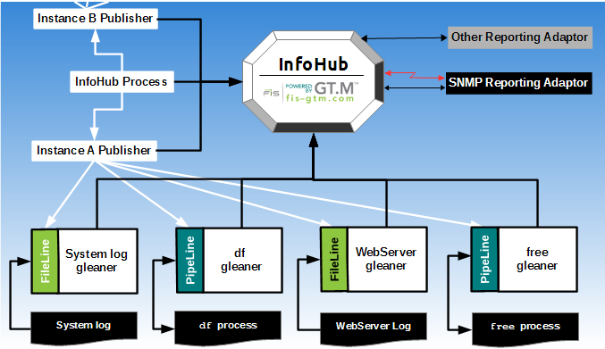
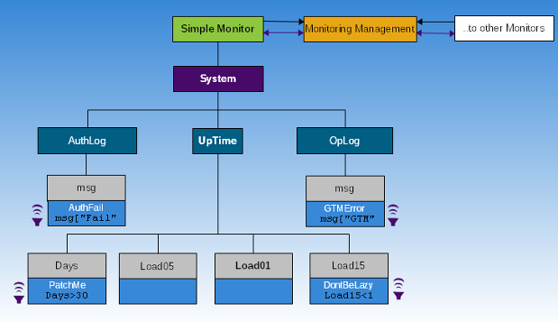
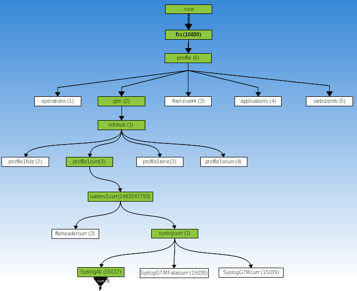
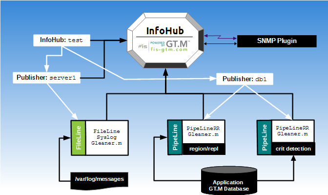
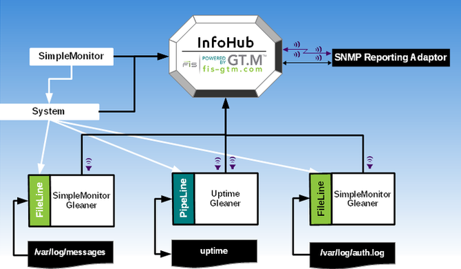

Copyright (C) 2014, 2018 Fidelity Information Services, Inc. All rights reserved.
Permission is granted to copy, distribute and/or modify this document under the terms of the GNU Free Documentation License, Version 1.3 or any later version published by the Free Software Foundation; with no Invariant Sections, no Front-Cover Texts and no Back-Cover Texts.
GT.M™ is a trademark of Fidelity Information Services, Inc. Other trademarks are the property of their respective owners.
This document contains a description of GT.M and the operating instructions pertaining to the various functions that comprise the system. This document does not contain any commitment of FIS. FIS believes the information in this publication is accurate as of its publication date; such information is subject to change without notice. FIS is not responsible for any errors or defects.
13 March 2018
| Revision History | ||
|---|---|---|
| Revision r4.5 | 13 March 2018 |
|
| Revision 63344_62100 | 06 August 2014 | Update from pre-release version to include content reflecting generally available software. |
| Revision 63141_61528 | 18 January 2014 | First published revision. |
Table of Contents
- 1. About This Manual
- 2. FIS InfoHub
- 3. InfoHub Tasks
- 4. Configuring an InfoHub
- Defining an InfoHub Descriptor
- Defining an Include Descriptor
- Defining an Env Descriptor
- Defining an InfoDict Domain Descriptor
- Defining an InfoDictItem Descriptor
- Defining a Publisher Descriptor
- Defining a FileLine Descriptor
- Defining a PipeLine Descriptor
- Defining a Subscriber Descriptor
- Defining a Subscription Descriptor
- Writing an xLine Gleaner
- 5. Appendix A: FIS GT.M SNMP Plugin
- Prerequisites
- SNMP Plugin Overview
- Installing the SNMP Plugin
- Operating the SNMP Plugin
- Starting the SNMP Plugin
- Monitoring (Checking) an SNMP Plugin
- Shutdown an SNMP Plugin
- Performing a GET Request (snmpget)
- Performing a GETNEXT Request (snmpgetnext)
- Exploring the InfoHub MIB (snmptranslate)
- Listening for Alerts (snmptrapd)
- 6. Appendix B: Reference Implementations
- 7. Appendix C: Error Messages
Table of Contents
Your InfoHub distribution has three parts – the InfoHub Product, Reference Implementation examples developed using the InfoHub Product, and an SNMP Reporting Adaptor. To set up InfoHub to monitor GT.M, read the following sections in the specified order– InfoHub Overview, InfoHub Concepts, InfoHub Tasks, Appendix A: FIS GT.M SNMP Plugin, and Appendix B: Reference Implementations. These sections help you understand the basics of InfoHub and customize Reference Implementation examples.
To use InfoHub to build a general-purpose monitoring and alerting application, read the following sections in the specified order–InfoHub Overview, InfoHub Concepts, InfoHub Tasks, Appendix A: FIS GT.M SNMP Plugin, Appendix B: Reference Implementations, and Configuring an InfoHub. Also, go through the M code of all the reference implementation example gleaners and review their Configuration files to understand how they manage monitoring and alerting.
Notes marked as InfoHub Internals are meant for those who plan to support InfoHub or develop a fairly advanced understanding of InfoHub. Other readers can skip the InfoHub Internals notes.
If you are in a hurry and just want to see a quick demonstration of how InfoHub works, proceed directly to the Uptime and Log File Monitoring Reference Implementation section and follow the step-by-step installation instructions provided in that section.
Table of Contents
The FIS Information Hub (InfoHub) is a general-purpose application to gather, store, access, and monitor information. It is a "Hub" because it provides a central location for storing current and historical information from multiple environments and from multiple sources in each environment. InfoHub is "general-purpose" because it can be configured for use by tools via SNMP or any connector API for analytics, trending, and reporting. InfoHub is an application written in GT.M, which drives its monitoring framework and provides an n-tuple key-value datastore to hold information. InfoHub includes a ready-to-run Reference Implementation for monitoring GT.M instances that run V6.0-002 or above.
An InfoHub installation contains one or more of:
InfoHub DB: A database that stores gathered information and manages interaction with Reporting Adaptors.
InfoHub Process: A process that manages the monitoring framework.
Publisher Process: A process that manages a set of related xLine (PipeLine or FileLine) processes, which gather, process, and file data from the Publisher's domain.
FileLine Process: A process that monitors a file continuing to read data as it is appended. The FileLine also tracks the file path in way that handles file renaming, removal and creation. A FileLine is associated with a Publisher.
PipeLine Process: A process that monitors a process using a UNIX pipe (by means of a GT.M PIPE device). A PipeLine is associated with a Publisher.
Subscriber: A specified condition that receives subsciption notifications from the InfoHub; a Subscriber may also provide general query functionality of a Reporting Adaptor.
Subscription: A specified condition that generates a notification to a Subscriber when it is met.
Reporting Adaptor: A process that retrieves information from the InfoHub database; a reporting adaptor, may, or may not, also be a Subscriber.
Gleaner: A plug-in routine invoked by an xLine (PipeLine or FileLine) process. It pairs monitored information with the relevant InfoDict Item ID(s) and returns those pairs to the xLine process for filing in the InfoHub database.
Plug-in: Code that interfaces to the InfoHub logic.
InfoHubs are general-purpose — one InfoHub can monitor multiple data sources, and a single data source can be monitored by multiple InfoHubs. The operations of an InfoHub are data-driven and defined in a text file called InfoHub Configuration File. The InfoHub Configuration File contains a series of descriptors. Descriptors define Publishers that provide information to gather and store in the InfoHub, and Subscriptions for Subscribers to alert based on the information stored in InfoHub. Descriptors also contain information about the environment, sources of data, and the frequency of monitoring (periodic, continuous, or on-demand).
Because it uses character functions for processing external data and only uses byte functions in cases where its internal operation makes them appropriate, an InfoHub can monitor data from sources that rely on ASCII or on various UTF encoding modes. As an application, it can run either in M mode or UTF-8 mode. It does restrict names in its configuration to ASCII, but it can monitor, process and store UTF-8 or UTF16 data.
InfoHub is a GT.M application. Like any other GT.M application, its database can be journaled, recovered, and replicated. An appropriately configured InfoHub using a reference implementation can monitor its own database. InfoHub includes ready-to-run reference implementations: GT.M Monitoring Reference Implementation and Uptime and Log File Monitoring (ULFM) Reference Implementation. For more information on the Reference Implementations available with the InfoHub Distribution, refer to Appendix B: Reference Implementations.
The following illustration is a Reference Implementation of InfoHub for monitoring operator log and WebServer log, and the process output from df and free shell commands. This illustration is only an example to explain a possible InfoHub framework in action. The InfoHub framework setup varies depending on the monitored components and requirements.

In this illustration, the white lines represent process controlled connections used for monitoring and the black lines represent the flow of data. The Instance A Publisher uses gleaners to gather data from the system log, WebServer log, and process output from df and free, to store in the InfoHub database.
The relationship between an InfoHub and an Adaptor is of two types–Subscriber and Query. The red line represents a Subscriber relationship where the Reporting Adaptor registers itself as a Subscriber with the InfoHub. When data arriving at the InfoHub matches a specified Subscription condition, InfoHub places the data in a queue and sends an interrupt (via a configured GT.M trigger) to the Subscriber. The Subscriber then fetches the data from a queue in the InfoHub database where InfoHub placed it before sending the interrupt. If the Subscriber is the last interested Subscriber, it removes the data from the queue.
The black line represents a Query relationship where the Reporting Adaptor retrieves the requested data from the InfoHub repository . The data flows from the InfoHub to the Subscriber, and the entire flow is managed by the Reporting Adaptor - InfoHub is not aware that the Reporting Adaptor exists.
A single Adaptor can have either one or both relationships with InfoHub. The following illustration demonstrates the relationships between InfoHub and Adaptor(s).
![[Note]](images/note.jpg) | Note |
|---|---|
InfoHub runs on GT.M V6.0-002 or above. To monitor log files, InfoHub requires the the FOLLOW deviceparameter which was first introduced in V6.0-002. The FOLLOW deviceparameter enables monitoring of sequential disk files that are concurrently being updated by other processes. The GT.M Monitoring Reference Implementation monitors GT.M V6.0-002 using the $ZPEEK() function, which extracts state information from database/journal files. However, using GT.M programming and shell scripting, it is possible to modify that reference implementation to monitor any GT.M version prior to V6.0-002. Required modifications deal with the format and content of file header listings, messages, and gleaning techniques that vary from release to release. For example, to monitor an earlier release which lacks the $ZPEEK() function, you have to use other techniques, such as parsing DSE output, for example, with a program such as the %DSEWRAP utility. However, you do not need to create an alternative functionality for the FOLLOW deviceparameter because it is available within InfoHub as part of the V6.0-002 and can be used for sequential disk files created by any prior GT.M version. |
InfoHub is not limited to monitoring GT.M applications. Its ability to gather information and interface with other Reporting Adaptors makes it a useful tool for a broad range of monitoring and alerting needs including (but not limited to):
Monitoring of STDERR, STDOUT, STDIN, application and system log files, configuration files, and so on.
Monitoring of processes and system resources.
Alerting Subscribers based on pre-configured conditions.
General-purpose storage and retrieval of time-series data.
This section explains InfoHub concepts and roles of all components of InfoHub.
-
InfoHub Configuration File An InfoHub Configuration File contains line entries for descriptors that configure an InfoHub. Each descriptor starts with a case-insensitive keyword that defines a type. Descriptors also typically contain Names and IDs. A Name is case-sensitive and must start with an alphabetic character; it can contain up to 32 alpha-numeric characters. An ID is a 31 bit positive integer.
-
InfoHub Descriptor An InfoHub descriptor is generally the first non-comment line of an InfoHub Configuration File. It establishes the ID and/or Name of the InfoHub to which the Configuration File applies.
Especially in a world of cloud-based computing, systems are ephemeral, but data gleaned from monitoring them often has long-term value and will require storage beyond the lifetime of individual systems. As the InfoHubID is the first level key used to store information in an InfoHub database. Giving each InfoHub a distinct key simplifies merging data from multiple InfoHubs into a database without changing first level keys. If ID is unspecified for a new InfoHubName, InfoHub assigns a random ID at creation time. FIS recommends using a random ID for each new InfoHub.
The syntax of an InfoHub Descriptor is:
InfoHub:[InfoHubName][:InfoHubID]
-
InfoDict Descriptor The InfoHub InfoDict is an information dictionary for data stored in an InfoHub. InfoDict Descriptors describe the relationships between InfoHub components. There are two types of InfoDict Descriptors – InfoDict Domain and InfoDict Item. An InfoDict Domain has a Descriptor called InfoDict and groups a category of components into a name space. An InfoDict Domain can have multiple parent Domains and can also be the parent of multiple child Domains.
An InfoDict Item has a Descriptor called InfoDictItem. An InfoDict Item is a named object within an InfoDict Domain. By default, every Item in an InfoDict Domain has a path to all the Items in any Domain that name it as a parent. If a domain has a parent that contains an item with an ID and Name that match its own ID and Name, only the matching item in the parent domain has a path to the items in the child domain. For example, if a domain D contains items A, B and X, and a second domain C names D as a parent and contains items J and K, the configuration has paths A->J, A->K, B->J, B->K, X->J and X->K; if there is a third domain X with an ID that matches the ID of the X item in D, names D as a parent and contains items P and Q the configuration also has paths X->P and X->Q.
In the following illustration, gray and light blue boxes represent InfoDict Items and the rest represent InfoDict Domains. You associate InfoDict Items with an element or a collection of elements you want to monitor. You typically create an InfoHub framework by associating InfoHub components including Publishers, PipeLine Processors, FileLine Processors, and Subscriptions with InfoDict Domains and Items. The association of InfoDict Domains/Items with InfoHub components/monitoring elements is a matter of configuration and conventions in your organization. The following example shows:
An InfoHub called Simple Monitor.
InfoDict Items with msg, Days, Load01, Load05, and Load15 to describe monitored information.
A Publisher with System to mange information gathering.
A PipeLine processor with UpTime to monitor process output (Days, Load01, Load05, and Load15) of the
uptimecommand.FileLine processors called AuthLog and OpLog to monitor messages (msg) in authentication log (/var/log/auth.log) and system log (/var/log/messages).
Subscriptions called GTMErr, AuthFail, PatchMe, and DontBeLazy each to watch a specified condition and send notifications to Subscribers. For example, a condition such as
msg["Fail"could help Monitoring Management determine the occurrence of a failed login attempt.A Reporting Adaptor with Monitoring Management that uses the GTMErr, AuthFail, PatchMe, and DontBeLazy Subscriptions and also, on request, gathers other data from System Monitor to report information. Additionally, the diagram shows Monitoring Management as a reporting adaptor that interfaces with other Monitors, using other components in the same InfoHub or other InfoHubs, and their Subscriptions to aggregate information across multiple systems.

The bold text starting from Simple Monitor towards System up to Load01 denotes one Path.
This illustration is conceptual and merely describes at a high-level how InfoHub uses InfoDicts. In the real world, you would create InfoDict hierarchy and Paths according to your monitoring requirements, your conventions, and nuances of the business processes in your organization.
The syntax of an InfoDict Domain Descriptor is:
InfoDict:InfoDictName:[InfoDictID][:{ParentInfoDictID | ParentInfoDictName}]The syntax of an InfoDict Item Descriptor is:
InfoDictItem:{InfoDictID | InfoDictName}:ItemName:[InfoDictItemID]:[Label]:[Type][:ItemDescription]-
Publisher Descriptor Manages the FileLine and PipeLine processes gathering information for a particular environment.
The syntax of an Env Descriptor is:
Publisher:Publisher:{InfoDictID|InfoDictName}:[PublisherName]:[PublisherID]:[APIDir]:[TempPWD]:[TempDBAlloc]:[TempDBExtend]-
Env Descriptor Manages the environment provided to information gathering processes. Depending on its position in the configuration file, an Env descriptor can be associated with the InfoHub itself (that is, common to all Publishers), or it can be associated with a specific Publisher, which applies it to any PipeLine processing for that Publisher.
The syntax of an Env Descriptor is:
Env:EnvVarName[=[Value]][,,,,]
-
FileLine Descriptor A FileLine descriptor defines the monitoring of a text file. The Publisher master process JOBs a FileLine process which reads the monitored file, line by line, executing a GT.M extrinsic function invocation for each line read to gather per-line information. The FileLine process waits for and reads lines from the monitored file (behavior equivalent to a tail -f). The InfoDict Descriptor illustration associates OpLog and AuthLog each with a FileLine.
The syntax of a FileLine Descriptor is:
FileLine:{InfoDictID | InfoDictName}:FileLineName:[FileLineID]:{PublisherID | PublisherName}:/path/to/Filename:[CheckCycle]:[Timeout]:[PieceSeparator]:[PreExpr]:[InfoExpr]:[PostExpr]-
PipeLine Descriptor A PipeLine Descriptor defines the aspects of monitoring output from a process. The monitored process can be a GT.M (any version) process or any other UNIX process. The Publisher master process JOBs a PipeLine process which OPENs a PIPE device using the configured command and READs its stdout and/or stderr line by line, feeding each one to the gleaner extrinsic function configured as InfoExpr. The InfoExpr gleaner sub-routine performs any processing of the raw input from the PIPE into zero or more key:value pairs ready for filing by the PipeLine process in the InfoHub database. The PipeLine can also be configured with a PreExpr and/or a PostExpr. The InfoDict illustration associates the InfoDict Name UpTime with a PipeLine.
The syntax of a PipeLine Descriptor is:
PipeLine:{InfoDictID | InfoDictName}:PipeLineName:[PipeLineID]:{PublisherID | PublisherName}:PipeCmd:[PipeCycle]:[Timeout]:[PieceSeparator]:[PreExpr]:[InfoExpr]:[PostExpr]-
xLine Gleaner An xLine Gleaner implements the PreExpr (optional), InfoExpr and PostExpr (optional) used in the FileLine and PipeLine. The gleaner performs any processing of each raw input line from the file into zero or more key:value pairs ready for filing by the xLine process in the InfoHub database. The xLine process checks each key returned by the gleaner extrinsic function to see that it's configured, and files it if it is or discards it if it isn't. The xLine can also be configured to invoke a PreExpr, that might perform any appropriate initialization when it first starts and a PostExpr that might provide summary information when it shuts down. PreExpr and PostExpr can return zero or more key:value pairs to the xLine base routine. Typically, you use a FileLine Gleaner for active monitoring of a text file and a PipeLine Gleaner for any formatting of information returned by the PIPE coprocess.
-
Include Descriptor An Include Descriptor specifies a file that contains additional descriptors, and permits different organizations of descriptors, such as by type or target environment.
The syntax of an Include Descriptor is:
Inc:Include:FilePathSpecification
-
Subscriber Descriptor The InfoHub alerts a Subscriber when a configured condition occurs. A Subscriber can monitor multiple Subscriptions. In the InfoDict illustration, an example for a Subscriber is Monitoring Management which gets alerted when a configured condition such as
msg["Fail"occurs. Subscribers provide reactive and passive monitoring where there is a need to react when a Subscription condition occurs.The syntax of a Subscriber Descriptor is:
Subscriber:{InfoDictID | InfoDictName}:[SubscriberName]:[SubscriberID]For more information, see "Reporting Adaptor".
-
Subscription Descriptor A Subscription watches for a condition in an InfoDict Item to send alerts to its Subscribers. The condition is specified using a GT.M binary operator (excluding concatenation and non-relational arithmetic operators) or the (case-insensitive) text "NoInfo". The GT.M binary operator condition can be used to establish several monitoring conditions including setting thresholds, detecting changes in the value of the InfoDict item, and so on. A Subscription can have multiple Subscribers and also apply to multiple Publishers.
"Noinfo" detects a period during which the specified InfoDict Item receives no new data. It is used for monitoring the lack of activity on an InfoDict Item. The InfoDict illustrations associate PatchMe, DontbeLazy, GTMError, and AuthFail with a Subscription because they watch a specified condition (for example,
Load15<1).The syntax of a Subscription Descriptor is:
Subscription:{InfoDictID | InfoDictName}:SubscriptionName:[SubscriptionID]:{InfoDictID | InfoDictName}:{InfoDictItemID | InfoDictItemName}:Condition:[Value]:[Period]:[entryref]:[SubscriberID,...]:[PublisherID,...]-
Reporting Adaptor A Reporting Adaptor generates reports from the data gathered in InfoHub. A Reporting Adaptor is not a part of the InfoHub core product. The relationship between an InfoHub and an Adaptor is of two types – Subscriber and Query. A Reporting Adaptor has a Subscriber relationship when it registers with an InfoHub to receive alerts from Subscriptions. A Reporting Adaptor has a Query relationship with InfoHub when it looks at data at its own initiative. A Reporting Adaptor may have a Subscriber, Query, or Subscriber and Query relationship with an InfoHub. These relationships are described in the Overview section. The InfoHub Reference Implementation includes a ready-to-use SNMP Reporting Adaptor for sending aggregated data using an SNMP sub-agent via the Internet standard AgentX protocol (RFC 2741) for report presentation. The InfoDict illustration, Monitoring Management, uses a Reporting Adaptor. You can use a Reporting Adaptor for both proactive monitoring, to access data from InfoHub, as well as for reactive monitoring, in response to an alert to a Subscriber from InfoHub. Although a Subscribers must be registered with InfoHub, proactive monitoring can be transparent to InfoHub.
The syntax of a Subscriber Descriptor is:
Subscriber:{InfoDictID | InfoDictName}:[SubscriberName]:[SubscriberID]-
Configuration Processing An InfoHub Configuration File must cover all existing configuration to be retained or modified as well as any new configuration. Configuration processing disables any preexisting item(s) omitted by a new file, but does not purge its configuration (or its related data). You can purge information in the InfoHub that is older than a specified time.
The following aspects are common to all InfoHub Configuration Files:
InfoHub configuration files are descriptive, line-oriented, ASCII or UTF-8 text files. If you use UTF-8 characters outside the ASCII subset in the configuration files, InfoHub itself must run in UTF-8 mode.
Leading and trailing whitespace (tab or space) is ignored.
Lines starting with two forward slashes ("//"), as well as blank lines, are comment lines.
Names (such as a PublisherName) start with an alphabetic character, followed by zero to 31 ASCII alphanumeric characters. Except where otherwise explicitly stated, InfoHub uses case-sensitive Names. Attempting to use a Name that does not meet these parameters produces an IHBADNAME error.
IDs (such as a PublisherID) are positive (non-zero) canonical GT.M integers; attempting to use zero (0) for an ID produces an IHZEROIDINVALID error; attempting to use a non-integer or out-of-range ID produces an IHIDINVALID error. Configuration processing supplies IDs for items specified by Name, but without an ID. Allowing the configuration processing to generate random IDs for items such as Publishers makes it easier to move existing information between InfoHub databases with almost no likelihood of conflict. You should make an explicit choice of ID under the following circumstances:
The gleaner needs to coordinate with the configuration - for example the GT.M monitoring reference implementation use gather_instance_info.sh and gtmConfGenerator.m to generate unique InfoDictItems for the databases and instance names in a GT.M instance.
You have multiple Subscribers subscribing to different Subscriptions - Subscriptions associate with Subscribers by ID.
You have multiple Publishers producing Subscriptions in overlapping, but non-identical sets - Subscriptions associate with Publishers by ID.
Attempting to configure a descriptor with an unrecognized type produces an IHBADDESCTYPE error.
Reading the same Configuration File repeatedly is a no-op.
While the first colon (:) is frequently required, other trailing colon delimiters are optional, although for simplicity the descriptor syntax definitions technically appear to require them. Attempting to configure a descriptor with too many colon (:) delimiters produces an IHEXTRADELIM error - this attempts to guard against inadvertent use of embedded delimiters.
Fields shown as optional may not be optional under all conditions - for example: while both Name and ID may be optional, typically you must supply at least one of them, and, for a pattern match (?) or NoInfo condition, Value is not required (actually not accepted), for other conditions, it is required.
The InfoHub process parses and applies the Configuration File. The presence of even one error in the Configuration File or any associated Include files prevents the configuration process from loading its specifications at all and from recording their contents. In order to facilitate rapid debugging of Configuration files, the configuration process attempts to continue processing after it detects most errors, which can produce ancillary or duplicate errors. The configuration process records the fact that it read and either accepted or rejected the Configuration File.
Table of Contents
This section contains information about installing and creating an environment configuration for InfoHub.
InfoHub is available under the terms of the Affero GNU General Public License (AGPL) version 3, from Source Forge ( http://sourceforge.net/projects/fis-gtm). Contact FIS if you wish to obtain InfoHub under the terms of another license.
Ensure that you have a correctly configured installation of the following software:
|
Software |
Minimum Version |
Notes |
|---|---|---|
|
GT.M |
V6.0-002 or above |
InfoHub requires a correctly installed distribution for GT.M V6.0-002 or above. For information on installing GT.M, refer to "Installing GT.M" chapter of the UNIX Administration and Operations Guide.
|
|
gtmposix |
63250_37800 |
InfoHub requires a correctly built gtmposix plugin. Infohub uses the gtmposix plugin to access POSIX functions available on POSIX platforms (UNIX/Linux). For more information on installing the gtmposix plugin, refer to readme.txt available in the gtmposix distribution available on sourceforge.net. |
Find or create a directory to hold your InfoHub distribution files and make that your current directory.
Example:
$ cd /opt
Unpack the InfoHub distribution to the current directory with a command such as the following (your UNIX version may require you to first use gzip to decompress the archive and then tar to unpack it; the tar options may also vary):
$ tar zxvf /Distrib/InfoHub/InfoHub.63344_62100.tar.gz
$ mkdir /opt/InfoHub/configs
Congratulations! InfoHub is now unpacked in the /opt/InfoHub directory. Proceed to InfoHub Environment Setup to set up a default environment.
Your InfoHub distribution comes with three Bourne shell environment setup scripts that automatically define InfoHub environment variables and display the commands to create an InfoHub database and a global directory if they do not already exist. These scripts are designed to give you a friendly out-of-the-box InfoHub operations experience. Even though you can perform normal InfoHub operations without using these scripts, it is important to go through these scripts to understand the how to manage environment configuration for InfoHub. These scripts are as follows:
-
infohub_site.sh Contains placeholders for defining
ihsrcdir(the source directory of your InfoHub distribution),gtmgbldir(the InfoHub global directory which resides in the same directory as the InfoHub database and services), andgtm_dist(the GT.M distribution used to run InfoHub).-
infohub_profile.sh Sources
$HOME/infohub_site.sh, creates an environment for InfoHub using the environment variables defined ininfohub_site.sh. It displays commands to create an InfoHub database and global directory if they do not already exist. When it detects a misconfiguration, it displays the misconfigured environment variable name and stops execution.
To use these environment setup scripts, perform the following steps:
Copy
infohub_site.shto$HOME/.infohub_site.sh.Use your favorite editor to open
$HOME/.infohub_site.shor customize it in place as 'custom_infohub_site.sh' and set appropriate values for:ihsrcdir: Path to the directory holding your InfoHub distribution files.gtmgbldir: Absolute path to the global directory where you want to place your InfoHub database and InfoHub services.gtm_dist: Path to the directory of the GT.M distribution (V6.0-002 or above) used to run InfoHub.
Source
infohub_profile.shon the command line or add the following command in your~/.profile.$ source /path/to/infohub_profile.sh
When you source a infohub_profile.sh, it displays the commands to set up a default InfoHub environment (global directory and a default database) if none exists.
Execute the following command to load the server1.conf configuration file (discussed later in this document)
$ $gtm_dist/mumps -run InfoHub --action=configure --file=$ihsrcdir/configs/server1.conf
Execute the following command to start an InfoHub:
$ $gtm_dist/mumps -run InfoHub --action=start
Execute the following command to display the status of InfoHub with process listing:
$ $gtm_dist/mumps -run InfoHub --action=full
Execute the following command to shutdown an InfoHub:
$ $gtm_dist/mumps -run InfoHub --action=shutdown
Execute the following command to rundown an InfoHub:
$ $gtm_dist/mumps -run InfoHub --action=rundown
To perform any InfoHub operation without using the infohub_*.sh scripts, at a bare minimum, you need to set the following environment variables:
gtm_dist: Set the gtm_dist environment variable to point to the location of the GT.M distribution (which must be V6.0-002 or higher).
export gtm_dist=/usr/lib/fis-gtm/V6.0-002_x86_64
GTMXC_gtmposix: Set the environment variable GTMXC_gtmposix to point to the absolute location of gtmposix.xc.
export GTMXC_gtmposix=$gtm_dist/plugin/gtmposix.xc
gtmroutines: Set the environment variable gtmroutines to include the current directory and location of the InfoHub installation, here we used /opt/InfoHub, $gtm_dist and the location of the %POSIX.m routine (typically installed to $gtm_dist/plugin/r).
export gtmroutines="$PWD(/opt/InfoHub /opt/InfoHub/pipecmds /opt/InfoHub/plugins) $gtm_dist/plugin/o($gtm_dist/plugin/r) $gtm_dist"
gtmgbldir: Set the environment variable gtmgbldir to point to the location of the global directory for your InfoHub database.
export gtmgbldir=/path/to/InfoHub.gld
If you are not using the InfoHub environment setup scripts provided with your InfoHub distribution, set the minimum key and record sizes to 1000 and 4000 respectively and block size to 4096 for the global directory for your InfoHub database. The InfoHub Bourne shell Environment setup scripts run a GDE command file to automatically set these values for the InfoHub global directory.
For more information on performing InfoHub operations, refer to Starting an InfoHub, Monitoring (checking) an InfoHub, Restarting an InfoHub, Shutting down an InfoHub, Rundown an InfoHub, Troubleshooting (debugging) an InfoHub, and Purging an InfoHub.
The following table describes some files in your InfoHub distribution. Note that InfoHub Product Routines files are part of the core InfoHub product and the Reference Implementations files are examples using InfoHub. The Uptime and Log File Monitoring Reference Implementation (ULFM) is one of the ready-to-run implementations that monitors the output of the uptime command, operator log, and authentication log requiring any additional configuration.
|
InfoHub Product Routines | |
|---|---|
|
IHsnmp.m |
Implements the InfoHub SNMP Adaptor that performs all SNMP Plugin operations. |
|
InfoHub.m |
Implements the InfoHub API for all InfoHub operations. |
|
InfoHubActionHandler.m |
Implements orderly execution of InfoHub actions. |
|
InfoHubConfigure.m |
Validates and loads an InfoHub Configuration File. |
|
InfoHubCfgExtract.m |
Implements extraction and listing of configuration files. |
|
InfoHubCli.m |
Implements parsing of InfoHub command syntax to invoke InfoHub actions actions. |
|
InfoHubCliParser.m |
Used by the InfoHub routine to parse the command line options. |
|
InfoHubDBSetup.m |
Routine that creates a temporary database environment (mumps.gld and mumps.dat) for each Publisher; if necessary, removes the existing temporary database. |
|
InfoHubError.m |
Implements the InfoHub's Error handler. |
|
InfoHubErrorMessage.m |
The collection of InfoHub Error messages with severity codes. |
|
InfoHubFileLine.m |
Implements the FileLine job. |
|
InfoHubJobs.m |
Used by the InfoHub routine to JOB a process and to obtain its status. |
|
InfoHubMain.m |
Implements the main InfoHub job. |
|
InfoHubNoInfo.m |
Implements the Subscription that detects no change of a configured value within a configured period. |
|
InfoHubNotify.m |
Implements basic InfoHub subscription triggers |
|
InfoHubPublisher.m |
Implements the Publisher job. |
|
InfoHubPurge.m |
Implements time-based removal of data from the InfoHub globals. |
|
InfoHubPipeLine.m |
Implements the PipeLine process. |
|
InfoHubProcessMonitor.m |
Implements detection of process failure and restart. |
|
InfoHubUtils.m |
Common utility routines for InfoHub. |
|
InfoHubVersion.m |
The file with the current version of the InfoHub. The version is taken from the release date in the form of $HOROLOG where an underscore replaces the comma. |
|
ULFM Reference Implementation files | |
|
LogFileGleaner.m |
A simple gleaner routine that prepends each line read with a key, 9999. The format of result is <key>:<line_read_value>. |
|
UptimeGleaner.m |
A gleaner program that processes the output of the uptime command. It separates the uptime command fields into the key value pairs |
|
SimpleMonitor.conf |
The InfoHub configuration file used to configure the ULFM Reference Implementation. |
You can interact with InfoHub from the shell and from within GT.M. To interact with an InfoHub from the shell, the general command is:
$gtm_dist/mumps -run InfoHub --action=<Action> [--<Action_parameters>[=values]...] [--infohub=InfoHubID|InfoHubName] [--gbldir=/path/to/globaldirectory]
<Action> is one of the following: configure, extract, jobexam, purge, restart, rundown, start, status, shutdown, usage, version, or list. The default action is status.
[--<Action_parameters>[=values]...] depends on the selected <Action>.
An InfoHub database can store multiple InfoHubs and there can be multiple databases each holding multiple InfoHubs. You can perform administration operations on only one InfoHub with any given command. The InfoHub command line interface provides the optional --infohub and --gbldir arguments to select an InfoHub. You can provide either or both these arguments to select an InfoHub. Even if these two arguments are not specified, the InfoHub logic tries using the current $zgbldir (initialized from the gtmgbldir environment variable) to select the InfoHub that was last configured for the global directory.
--gbldir is an optional argument that specifies the path of the global directory for the InfoHub database. If the argument specifies a relative path, the InfoHub API automatically converts it to an absolute path. An absolute path is necessary for two reasons. First, InfoHub uses the global directory as a possible means to unambiguously identify an InfoHub when a command does not specifically identify one. Second, because they run in a temporary directory, InfoHub JOB'd processes typically need an absolute path to the global directory.
Use the --gbldir argument when your shell environment has a different setting for the environment variable gtmglbdir or when you want to select between different InfoHub database views.
--infohub is an optional argument that specifies the InfoHub ID or InfoHub Name of an InfoHub. Use this argument when you need to perform administration operations for a specific InfoHub when a database holds more than one InfoHub.
Configuration processing stores the last global directory used to configure each InfoHub. If --infohub is not specified but $ZGBLDIR points to an InfoHub database, the InfoHub CLI automatically tries to determine an InfoHub by matching the absolute path in $ZGBLDIR, which could be set from either the gtmgbldir environment variable or the --gbldir argument, with one last used for an existing InfoHub.
If neither --infohub nor --gbldir is specified and there is no default InfoHub for the current $ZGBLDIR, configuration processing tries to select an InfoHub ID using the InfoHub Descriptor entry. If it does not find an InfoHub in the Descriptor entry, it automatically generates a random InfoHub Name and InfoHub ID for a new InfoHub.
To select an InfoHub, in most cases you would use --infohub to specify the InfoHub Name or InfoHubID or let the InfoHub API determine it automatically from the InfoHub Descriptor.
To interact with an InfoHub from within GT.M, invoke an entryref like:
<Action>^InfoHub(InfoHubID[,values])
While the shell command line interface automatically assigns suitable default options/values,the InfoHub API entry points require specified values.
InfoHubID specifies the numeric ID of an InfoHub. API users must convert InfoHub Names to numeric IDs.
All <Action> entry points in InfoHub API produce output to $IO. Future enhancement may remove this functionality.
![[Tip]](images/tip.jpg) | InfoHub Internals |
|---|---|
^InfoHubConf("GlobalsDirs",$zgbldir) contains the ID of the most recently configured InfoHub. With a few exceptions, e.g the Actions is "status", "list", or "configure", the underlying mechanism for taking action on an existing InfoHub is to place information in the ^InfoHubActivity global and signal the InfoHubMain service process to invoke its $ZINTERRUPT, which in turn causes it to look in ^InfoHubActivity for instructions on which to act. The action initiating process returns to the operator once it sees an acknowledgement that the InfoHubMain service has taken over the action. Although FIS plans to maintain stability of the published CLI in future releases of InfoHub, without prior notice, FIS may change the underlying mechanism within any InfoHub release. When starting an InfoHub from the shell command line or from GT.M using the appropriate entryref, the InfoHubMain launches with a JOB command, and control returns to the invoking process once the InfoHub has successfully launched. |
| InfoHub API |
|---|---|
More details about the InfoHub API are also documented in the file InfoHub/InfoHub.m. Comments before each entryref describe the input parameters and their types. |
Related Information:
To load a configuration file on an InfoHub from the shell, execute a command like:
$ $gtm_dist/mumps -run InfoHub --action=configure --file=<ConfigFileName> [--verbose[=filename]]
--file specifies the relative or absolute path to the location of the base InfoHub Configuration File.
--gbldir specifies the absolute path to the location of the global directory for InfoHub.
--verbose enables verbose output. If you specify --verbose=filename it sends the output to the specified file; --verbose alone sends the output to stdout. Use this option to debug configuration errors.
Attempting to configure a file that can't be opened for reading, or is defective, produces an IHBADFILE error. Attempting to configure an InfoHub with an improperly installed gtmposix plug-in may produce an IHGETTIMEFAIL error.
To load a configuration file on InfoHub from within GT.M, invoke the following entry point in the InfoHub API as an extrinsic function:
$$configure^InfoHub("InfoHubID","/path/to/ConfigFileName")If the configuration file contains an InfoHub descriptor, the InfoHubID is optional and, if supplied, must match the one in the descriptor.
| InfoHub Internals |
|---|---|
As IDs, and possibly Names, may have meaning for tools that report on ^InfoHubInfo data, the Infohub configuration processing rejects attempts to change the association between an ID and a Name. A user with sufficient understanding of, and access to, the InfoHub database can change such associations programmatically using GT.M code. |
Example:
$ $gtm_dist/mumps -run InfoHub --action=configure --file=samples/SimpleMonitor.conf
This example uses the CLI for InfoHub to load an InfoHub Configuration File.
GTM>if $$configure^InfoHub("","samples/SimpleMonitor.conf")This example loads the server1.conf Configuration File on InfoHub.
GTM>if $$configure^InfoHub("","samples/SimpleMonitor.conf")
Loading the configuration file samples/SimpleMonitor.conf
GTM>if $$configure^InfoHub("","samples/SimpleMonitor.conf")
Loading the configuration file samples/SimpleMonitor.conf
Configuration unchanged
GTM>This example attempts to load the same SimpleMonitor.conf twice using 7421 as the InfoHub ID.
Related Information:
To list all InfoHubs available in the current global directory, execute a command like:
$ $gtm_dist/mumps -run InfoHub --action=list
To list all InfoHubs available in the current global directory from within GT.M, invoke the following entry point in the InfoHub API as an extrinsic function:
$$list^InfoHub()
Example:
$ $gtm_dist/mumps -run InfoHub --action=list
GTM>if $$list^InfoHub()
Both examples list all InfoHubs available in the current global directory.
Related Information:
To extract the contents of an InfoHub Configuration File loaded for an InfoHub, execute a command like:
$ $gtm_dist/mumps -run InfoHub --action=extract [--configuration=[0|1|2|3|..]
This command writes the configuration to standard output. The contents of "Included" files are also in the output.
--configuration specifies the Configuration Number of the InfoHub Configuration File. InfoHub associates a unique Configuration Number with every correctly configured InfoHub Configuration File loaded for an InfoHub. When configuration is not specified or is specified as 0, InfoHub produces a historic listing of all correctly configured InfoHub Configuration Files that were loaded for an Infohub. The listing includes Configuration Numbers, location of the InfoHub Configuration Files, and the time when they were loaded on InfoHub.
To extract an InfoHub configuration file from within GT.M, invoke the following entry point in the InfoHub API as an extrinsic function:
$$extract^InfoHub(InfoHubID,0|1|2|3|..)
Example:
$ $gtm_dist/mumps -run InfoHub --action=extract Configuration 1 was installed on 1383129299046237 from the file samples/SimpleMonitor.conf Configuration 2 was installed on 1383132419190354 from the file samples/SimpleMonitor.conf Configuration 3 was installed on 1383132426677351 from the file samples/SimpleMonitor.conf
GTM>if $$extract^InfoHub("11",0)Both examples produce a historic listing of all correctly configured InfoHub Configuration Files that were loaded for an InfoHub.
Related Information:
- “Operating an InfoHub”
- “Installing InfoHub”
- “Loading a Configuration File”
- “Listing all InfoHubs”
- “Extracting a Configuration File”
- “Starting an InfoHub”
- “Monitoring (Checking) an InfoHub”
- “Restarting an InfoHub”
- “Shutting down an InfoHub”
- “Rundown an InfoHub”
- “Troubleshooting (Debugging) an InfoHub”
- “Purging an InfoHub”
To start an InfoHub from the shell, execute a command like:
$ $gtm_dist/mumps -run InfoHub --action=start
This command uses the current configuration and starts the InfoHub process.
When starting an InfoHub for the first time, the InfoHub processes the current InfoHub configuration, acting on each item as it loads it.
The "start" action also suffices to start an InfoHub from a "dirty" shutdown, for example, after a system crash, or after an inadvertent MUPIP STOP of the InfoHubMain process. Startup after a system crash issues an error if the database has not been recovered to a clean state. Startup after an inadvertent MUPIP STOP of the main process causes the InfoHub to reconnect with existing processes and start missing processes. If the restart after a crash uses a different configuration, existing processes are all shutdown and restarted.
In the event that two simultaneous start commands are sent, only one succeeds. The other exits with an unacknowledged startup request.
To start an InfoHub from within GT.M, invoke the following entry point in the InfoHub API as an extrinsic function:
$$start^InfoHub(InfoHubID,$zgbldir)
Example:
$ $gtm_dist/mumps -run InfoHub --action=start
This example starts the InfoHub most recently associated with the current global directory.
GTM>if $$start^InfoHub(7421) JOB 10215 InfoHub Active at 1383133001659001
This example starts the InfoHub whose ID is 7421.
Related Information:
To check the status of an InfoHub from the shell, execute a command like:
$ $gtm_dist/mumps -run InfoHub --action=status [--full]
This command displays a summary of the current status and health of the InfoHub.
--full produces a process listing of all InfoHub processes.
To check the status of an InfoHub from within GT.M, invoke the following entry point in the InfoHub API as an extrinsic function:
$$status^InfoHub(InfoHubID,{0|1})0 specifies one line summary of the current status and health of the specified InfoHub and 1 is equivalent to the --full option.
Example:
$ $gtm_dist/mumps -run InfoHub --action=status
This example displays the one line summary on the status and health of the most recent InfoHub.
GTM>if $$status^InfoHub(7421,1) InfoHub ID |InfoHub Name |State 7421 |DEMO |Running Process listing 10215 InfoHub /usr/lib/fis-gtm/V6.0-002/mumps -direct InfoHub ^InfoHubMain 7421 /opt/InfoHub/InfoHub.gld 10222 NoInfo /usr/lib/fis-gtm/V6.0-002/mumps -direct InfoHub ^InfoHubNoInfo 7421 04261677 3 /opt/InfoHub/InfoHub.gld 10217 Publishers /usr/lib/fis-gtm/V6.0-002/mumps -direct InfoHub ^InfoHubPublisher 7421 321 /opt/InfoHub/InfoHub.gld 10305 FileLine /usr/lib/fis-gtm/V6.0-002/mumps -direct InfoHub ^InfoHubFileLine 7421 321 3 123 /opt/InfoHub/InfoHub.gld
This example displays the status of InfoHub ID 7421 and produces a process listing of InfoHub processes.
Related Information:
To pick up a configuration revision and restart an InfoHub, execute a command like:
$ $gtm_dist/mumps -run InfoHub --action=restart
To pick up a configuration revision and restart an InfoHub from within GT.M, invoke the following entryref:
restart^InfoHub(InfoHubID|InfoHubName)
This command stops all components whose configuration has changed and starts all components whose configuration has changed (which might not be the same set); attempting to restart of a non-running InfoHub produces an IHNOTRUNNING error.
![[Important]](images/important.jpg) | Important |
|---|---|
The restart command also clears prior restart history for each monitored process. Service monitors will not restart a configuration that fails to start five times within five minutes. |
Related Information:
To effect a clean InfoHub shutdown from the shell, execute a command like:
$ $gtm_dist/mumps -run InfoHub --action=shutdown
To effect a clean InfoHub shutdown from within GT.M, invoke the following entry point in the InfoHub API as an extrinsic function:
$$shutdown^InfoHub(InfoHubID|InfoHubName|^InfoHubConf("GlobalsDirs",$zgbldir)) | Important |
|---|---|
Although an InfoHub can be stopped with the MUPIP STOP command, FIS recommends against using MUPIP STOP to shut down an InfoHub because it leaves orphaned service processes. |
Example:
$ $gtm_dist/mumps -run InfoHub --action=shutdown
This example shuts down the InfoHub most recently updated using the current global directory.
GTM>if $$shutdown^InfoHub(7421)
This example shuts down the InfoHub having 7421 as the InfoHub ID.
| InfoHub Internals |
|---|---|
On receipt of a shutdown command (for example, from mumps -run InfoHub --action=shutdown), the InfoHubMain process sends a shutdown message (using the interrupt-based mechanism) to each NoInfo and Publisher process. Each Publisher process in turn sends similar shutdown messages to monitored FileLine and PipeLine processs. FileLine processs acknowledge receipt, switch their file access mode from FOLLOW to NOFOLLOW with a USE command, continue processing until the end-of-file or Timeout elapses, log their shutdown, and then halt. For a PipeLine process, the Publisher process sends it "shutdown" message. The PipeLine process sends a "shutdown message" to the PipeCmd process. The PipeCmd process does a READ x:1 at the start of every pass through for data collection. If it reads something as opposed to the 1 second timeout, the sub-process terminates immediately. If the process created by the PipeCmd is a GT.M process, it must READ or WRITE to its principal device in order to detect that PipeLine process has closed the pipe; it should then HALT. Each Publisher process waits to receive acknowledgement and shutdown completion status from each monitored xLine processes. Only then does it logs its own shutdown, and shuts down. When the InfoHubMain receives acknowledgements from all NoInfo and Publisher processes, it logs its shutdown, and shuts down. The shell command or extrinsic function call then completes. |
Related Information:
To perform an InfoHub rundown from the shell, execute a command like:
$ $gtm_dist/mumps -run InfoHub --action=rundown
After a shutdown caused by something other than an InfoHub "shutdown" action, such as a MUPIP STOP, or a system crash, or a switch-over to a new primary, a rundown cleans up the database.
To perform an InfoHub rundown from within GT.M, invoke the following entry point in the InfoHub API as an extrinsic function:
$$rundown^InfoHub(InfoHubID)
Related Information:
To debug an InfoHub from the shell, execute a command like:
$gtm_dist/mumps -run InfoHub --action=jobexam [--pidlist=<comma,delimited,list,of,PIDs>]
This command places the output of ZSHOW "*" in a file called infohub-<service>-<infohub id>[-<publisher | noinfo id>[-<xline id>]-<configuration sequence number>.ZSHOW_DMP_"_$JOB_"_"_<cntr>.
If --pidlist is specified, jobexam generates ZSHOW "*" output for only those InfoHub processes that are mentioned in the pidlist.
To debug an InfoHub from within GT.M, invoke the following entry point in the InfoHub API as an extrinsic function:
$$jobexam^InfoHub(InfoHubID,"comma,delimited,list,of,PIDs")
Example:
GTM>if $$status^InfoHub(7421,1) InfoHub ID |InfoHub Name |State 7421 |DEMO |Running Process listing 28981 InfoHub /usr/lib/fis-gtm/V6.0-003_x86_64/mumps -direct InfoHub ^InfoHubMain 7421 28987 NoInfo /usr/lib/fis-gtm/V6.0-003_x86_64/mumps -direct InfoHub ^InfoHubNoInfo 7421 1998603323 1 /home/jdoe/infohub/InfoHub/InfoHub.gld 28985 Publishers /usr/lib/fis-gtm/V6.0-003_x86_64/mumps -direct InfoHub ^InfoHubPublisher 7421 321 1 /home/jdoe/infohub/InfoHub/InfoHub.gld 29085 FileLine /usr/lib/fis-gtm/V6.0-003_x86_64/mumps -direct InfoHub ^InfoHubFileLine 7421 321 1 123 /home/jdoe/infohub/InfoHub/InfoHub.gld GTM>if $$jobexam^InfoHub(7421,"28981,28987") PID [28981] has been notified PID [28987] has been notified GTM>
$ $gtm_dist/mumps -r ^InfoHub --action=jobexam --pidlist=28981,28987 PID [28981] has been notified PID [28987] has been notified $
Both examples place the output of ZSHOW "*" in a file called infohub-<service>-<infohub id>[-<publisher | noinfo id>[-<xline id>]-<configuration sequence number>.ZSHOW_DMP_"_$JOB_"_"_<cntr> for PIDs 28981 and 28987.
| Important |
|---|---|
The ZSHOW "*" output in the JOBEXAMINE files may contain confidential information gleaned from the monitored components that the process holds in local variables, and, possibly, in Intrinsic Special Variables (ISVs). If that is the case in your InfoHub deployment, ensure that the files produced by this command are appropriately secured. |
Related Information:
To purge InfoHub entries from the shell, execute a command like:
$ $gtm_dist/mumps -run InfoHub --action=purge --before=<time> [--activity] [--config] [--info] [--all]
An InfoHub must be shutdown before purging.
--before removes information older than <time>. <time> is of the format "dd-mmm-yyyy HH:MM:SS". Where dd is the numeric day of the month, mmm is the three letter abbreviation of the month and yyyy is the four digit year. The hours (HH), minutes (MM) and seconds (SS) are all optional. In order for the MUMPS to see the quoted string correct users must escape the quotation marks on the command line.
--activity removes ^InfoHubActivity (the InfoHub control global) entries.
--config removes ^InfoHubConfig (the InfoHub configuration global) entries that are no longer used.
--info removes ^InfoHubInfo (the InfoHub's data) entries.
--all removes all ^InfoHubActivity, ^InfoHubConfig, and ^InfoHubInfo entries.
To purge InfoHub entries from within GT.M, invoke the following entry point in the InfoHub API as an extrinsic function where 'TIME' is either a Unix time integer and 'options' is a MUMPS variable with subscripts "InfoHubActivity", "InfoHubConf", "InfoHubInfo" set to a positive integer value indicating which globals to purge:
$$purge^InfoHub(InfoHubID,TIME,options)
Example:
$ $gtm_dist/mumps -run ^InfoHub --action=purge --config --before=\"30-OCT-2013 09:00:00\"
This example removes all InfoHub configuration entries that were added before October 30, 2013 at 9 am UTC.
GTM>set (opt("InfoHubActivity"),opt("InfoHubConf"),opt("InfoHubInfo"))=1 if $$purge^InfoHub(7421,1383138000,opt)This example removes all entries related to configuration, InfoHub Activity, and InfoHub data that was added before 30-OCT-2013 09:00:00 UTC.
Related Information:
Table of Contents
- Defining an InfoHub Descriptor
- Defining an Include Descriptor
- Defining an Env Descriptor
- Defining an InfoDict Domain Descriptor
- Defining an InfoDictItem Descriptor
- Defining a Publisher Descriptor
- Defining a FileLine Descriptor
- Defining a PipeLine Descriptor
- Defining a Subscriber Descriptor
- Defining a Subscription Descriptor
- Writing an xLine Gleaner
Syntax:
InfoHub:[InfoHubName]:[InfoHubID]
InfoHubID: A unique 31-bit integer that identifies an InfoHub and does not change once it is defined.
InfoHub Name: The name of the InfoHub.
The InfoHub descriptor typically appears as the first non-comment line of the Configuration File.
If the InfoHub Descriptor is not specified, the configuration process uses the current value of gtmgbldir to see if the current global directory was previously associated with an InfoHubID, and, if so, uses the InfoHubID associated with that global directory. If the current global directory path was never used in association with an InfoHub ID, the configuration fails with an IHHUBDESCREQ error. If configuration processing encounters more than one InfoHub Descriptor, it produces an IHONEINFOHUBREQ error. If configuration processing finds the Name missing, it generates an eight-character Name using random alphanumeric ASCII characters.
If the descriptor specifies InfoHubName but not InfoHubID, the configuration process uses the previous value in ^InfoHubConf corresponding to InfoHubName, and if none is defined, (that is, this is a new InfoHubName), the configuration processing generates a unique random 31-bit positive integer to use (so that InfoHubID is unique for each InfoHub database), and stores it in the database in association with the InfoHubName. If configuration processing finds the InfoHubID corresponds to an InfoHub with no Name, it produces an IHBADSTOREDCONFIG error.
If the descriptor provides both the InfoHubID and the InfoHubName, and the ID is already in the configuration, but the specified Name does not match the existing Name, configuration processing produces an IHNAMEMISMATCH error.
| InfoHub Internals |
|---|---|
InfoHubID applies to all elements in a configuration file and is the first subscript for all global variables in the database related to a particular InfoHub, except for the sub-tree that maps global directories to InfoHubIDs using "GlobalsDirs" as the first subscript. Configuration processing stores InfoHub descriptor information in the following node: ^InfoHubConf(InfoHubID,BeginningSequenceNumber)=[EndingTimeStamp]:BeginingTimeStamp:InfoHubName:GldFileName:ConfigurationFileName |
| InfoHub Internals |
|---|---|
Processing a Configuration File is done using a GT.M LOCK on ^InfoHubConf with InfoHubID as a subscript to ensure only one process is handling a Configuration File for an InfoHub at a given time. If the configuration process detects an another process is holding a lock on this InfoHubID for more than 30 seconds, it produces an IHCONFLOCKED error. The Verbose option for configuration processing generates substantial output that documents how the processing works. This may be useful for debugging some types of configuration problems. If you have a rich configuration, consider building it up in a series of modest increments to make debugging easier. |
Example:
InfoHub:SimpleMonitor:11
This example defines an InfoHub called SimpleMonitor. This example is a part of SimpleMonitor.conf configuration file in the ULFM Reference Implementation.
Related Information:
- “Defining an Include Descriptor”
- “Defining an Env Descriptor”
- “Defining an InfoDict Domain Descriptor”
- “Defining an InfoDictItem Descriptor”
- “Defining a Publisher Descriptor”
- “Defining a FileLine Descriptor”
- “Defining a PipeLine Descriptor”
- “Defining a Subscriber Descriptor”
- “Defining a Subscription Descriptor”
Include files are fragments of a configuration file that permit modularization of configuration information. Configuration processing parses them as it reads their Include Descriptors. If configuration processing encounters a problem reading an Include file, the configuration fails with an IHBADFILE error. The format of an Include Descriptor is:
Inc:Include:file-path specification
The file path specification can be either an absolute path or a relative path. Relative paths are relative to the configuration file and not the current working directory.
On a system that has many independent things to monitor, use Include files to make it easy to activate and deactivate them in a configuration,
Example:
Include:InfoDictConf0.conf
Related Information:
- “Defining an InfoHub Descriptor”
- “Defining an Env Descriptor”
- “Defining an InfoDict Domain Descriptor”
- “Defining an InfoDictItem Descriptor”
- “Defining a Publisher Descriptor”
- “Defining a FileLine Descriptor”
- “Defining a PipeLine Descriptor”
- “Defining a Subscriber Descriptor”
- “Defining a Subscription Descriptor”
Zero or more Env descriptors can immediately follow the InfoHub descriptor, or start the configuration definition if the InfoHub descriptor is implicit; and zero or more Env descriptors can immediately follow any Publisher descriptor. Those in the first location define common environment variables for all processes used by the InfoHub; those in the second location define common environment variables for all PipeLine generated processes subject to that Publisher. The syntax of an Env Descriptor is:
Env:EnvVarName[=[Value]][,,,,]
If the configuration processing encounters an Env descriptor that does not follow the InfoHub descriptor or a Publisher descriptor, it produces an IHENVPLACE error. There are three types of Env descriptor—one sets values in the environment of InfoHub processes, another with an equal-sign but no value ensures environment variables are not set (that is, cleared), and a third to invoke a shell script that manages the target environment. For example:
The InfoHub may itself use an encrypted database. Blocking its obfuscated password in $gtm_passwd from other processes (such as PIPE processes in PipeLine descriptors, which do not need to access its database) is accomplished with an Env:gtmpasswd= descriptor (with an equal-sign, but no value) after the InfoHub descriptor.
A Publisher that gathers information from an application deployed on a different version of GT.M than the InfoHub (or with a global directory that uses relative paths to its database files and/or refers to environment variables) needs to have the appropriate environment variables set. If the InfoHub has only read access to the database, ensure that the gtm_tmp and gtm_log environment variables are appropriately set. Note: gtm_log is not used starting with GT.M V6.0-000. If the environment variable IHCD exists, the Pipeline sets its working directory to the value of IHCD. For example, when a global directory uses relative paths: IHCD is set to the base of the relative paths. A set of Env descriptor lines may look like:
Env:gtm_dist="/usr/lib/fis-gtm/V5.5-000_x86"Env:gtmgbldir="/var/myApp/gtm.gld"...
and provides the needed environment variables after the Publisher descriptor for PipeLine information gathering by that Publisher.
If an application provides a script that can be sourced to set up environment variables, Env:/path/to/script, can be used in lieu of setting them individually. Since this will overwrite the gtmroutines environment variable, please add the paths for the InfoHub back in using an ENV descriptor for gtmroutines environment variable. For example,
Env:/path/to/envscript.shEnv:gtmroutines="$gtmroutines /path/to/infohub /path/to/infohub/pipecommands /path/toinfohub/plugins /path/to/gtmposixplugin "If applications that run in both UTF-8 and M mode are involved, please adjust the gtmroutines enviroment variable descriptor accordingly. For example, for the applications using M mode:"
Env:gtmroutines="$gtmroutines /path/to/infohub/M(/path/to/infohub) /path/to/infohub/pipecommands/M(/path/to/infohub/pipecommands) /path/toinfohub/plugins/M(/path/toinfohub/plugins) /path/to/gtmposixplugin/M(/path/to/gtmposixplugin)"and for the applications using UTF-8 mode:
Env:gtmroutines="$gtmroutines /path/to/infohub/UTF8(/path/to/infohub) /path/to/infohub/pipecommands/UTF8(/path/to/infohub/pipecommands) /path/toinfohub/plugins/UTF8(/path/toinfohub/plugins) /path/to/gtmposixplugin/UTF8(/path/to/gtmposixplugin)"
Attempting to configure an env descriptor without providing a suitable environment produces an IHBADENV error. Each EnvVarName is a legal POSIX environment variable name, consisting solely of ASCII letters, digits, and underscores ("_"), of which the first character must not be a digit; if configuration processing encounters a failure to meet this criterion, it also produces the IHBADENV error. To allow for permissible, non-graphic values[1] of environment variables, and to allow environment variables to reference environment variables of the InfoHub itself (using the $ZTRNLNM() function), each Value is treated as a GT.M expr that the InfoHub evaluates before storing the result in its database.
| InfoHub Internals |
|---|---|
Configuration processing stores Env descriptor information in the following nodes: ^InfoHubConf(InfoHubID,"EnvSetUp",1,BeginningSequenceNumber)=[EndingSquenceNumber]:env=[value],..., where the string value of the node is constructed of shell commands that an InfoHub process uses to manage its environment. ^InfoHubConf(InfoHubID,"Publishers",PublisherID,BeginningSequenceNumber,"EnvSetUp")=[EndingSquenceNumber]:env=[value],..., where the string value of the node is constructed of shell commands that a Publisher process uses to adjust the environment provided to it by its InfoHub to be appropriate for a PipeLine process. Expression evaluation (implemented with indirection or XECUTE) also has the potential for side effects that can affect the InfoHub itself. To protect the InfoHub itself from side effects of evaluated expressions, the InfoHub processes Env descriptors in a routine which protects itself by:
|
Example:
Env:LC_TIME='fr_FR.UTF-8' Env:LANG='en_US.utf-8'
Related Information:
The InfoDict [Domain] Descriptor can appear anyplace after the InfoHub Descriptor, except immediately prior to an ENV descriptor, but most logically falls between any InfoHub Environment Descriptors and the Publisher Descriptors. An InfoDict is an organizational container or domain. While InfoDicts are the tool for organizing the schema and behavior of the InfoHub, they do so indirectly, and never appear in the paths of the main storage schema. The syntax of an InfoDict Domain Descriptor is:
InfoDict:InfoDictName:[InfoDictID][:{ParentInfoDictID | ParentInfoDictName}]InfoDictID: A unique number that identifies an InfoDict and does not change once it is defined in an InfoHub.
If there is no InfoDictID, the InfoHub configuration process attempts to map the Name to an existing InfoDict; if it finds none, it generates a new unique random 31-bit positive integer to use (that is, InfoDictID is unique for each InfoHubID), and stores the InfoDictID with the InfoDictName. If the configuration process detects an attempt to map multiple InfoDictIDs to one Name, it produces an IHDUPDICT error. If the configuration process finds no InfoDict Name or defined ID, it produces an IHDICTNAMEREQ error. If the configuration process detects an empty InfoDict, it produces an IHDEADDICT error.
InfoDictName: The Name of the InfoDict. For example, "Servers", "Databases", "Regions", and so on.
ParentInfoDictID or ParentInfoDictName: The InfoDictID or Name of a parent node. For example, "Servers" might be the name of the parent for "Databases".
ParentInfoDictID indicates there is an additional InfoDict domain that contains an item or items which fall above the items in this InfoDict domain in a hierarchy. If the configuration process detects there is no definition for the specified parent Name, it produces an IHPARENTUNDEF error. If the configuration process detects a circular path in InfoDict parent references, it produces an IHCIRCDICT error.
| InfoHub Internals |
|---|---|
Configuration processing stores InfoDict domain information in the following nodes: ^InfoHubConf(InfoHubID,"InfoDicts",InfoDictID,BeginningSequenceNumber)=EndingSequenceNumber]:InfoDictName ^InfoHubConf(InfoHubID,"InfoDicts",InfoDictID,BeginningSequenceNumber,0,ParentInfoDictID)=[EndingSequenceNumber]: ^InfoHubConf(InfoHubID,"InfoDicts",InfoDictID,BeginningSequenceNumber,"Children",ChildInfoDictID): this node is only maintained for the current configuration of this InfoHub. |
Example:
InfoDict:GenericDict::SystemDict InfoDictItem:GenericDict:OpLog:1137 InfoDictItem:GenericDict:AuthLog:1139
This example defines an InfoDict Domain called GenericDict and places two InfoDict Items—OpLog and AuthLog—under it. This example is a part of SimpleMonitor.conf configuration file in the ULFM Reference Implementation.
Related Information:
The InfoDictItem Descriptor can appear anywhere after the InfoHub Descriptor, except before an Env Descriptor, but most logically falls among or after any InfoDict [domain] Descriptors and before the Publisher Descriptors. InfoDictItems form the set of nodes the InfoHub can store. While you can create them explicitly, the configuration process can implicitly create InfoDictItems corresponding to some other InfoHub components (Publishers, xLines, Subscribers). The syntax of an InfoDictItem Descriptor is:
InfoDictItem:{InfoDictID | InfoDictName}:ItemName:[InfoDictItemID]:[Label]:[Type][;ItemDescription]InfoDictId or InfoDictName: The name or ID of the parent InfoDict Domain.
ItemName: A string value that identifies the InfoDict Item. An attempt to explicitly or implicitly configure an InfoDictItem without a Name produces an IHNAMEREQ error.
InfoDictItemID: A unique number that identifies an InfoDict Item and does not change once it is defined in an InfoHub.
If InfoDictItemID is not specified, the configuration gets the InfoDictItemID from the specified InfoDict domain. If the specified domain has no definition for the Name, the InfoHub configuration process generates a new unique random 31-bit positive integer to use (that is, InfoDictID is unique for each InfoDictID), and stores it with the InfoDictItem information. If the configuration process detects there is no Name or ID for the InfoDict, it produces an IHIDORNAMEREQ error. Note: the SNMP sub-agent provided with the GT.M monitoring Reference Implementation uses InfoDictItemIDs as indices in the OID index for each Value.
If InfoDictItemID is specified, configuration processing verifies before configuration completion that the specified InfoDict domain maps the specified InfoDictItemName; if it detects there is no Name or ID for a InfoDictItem, it produces an IHIDORNAMEREQ error; if it detects an attempt to map multiple InfoDictItemIDs to one Name, it produces an IHDUPITEM error. If configuration processing detects InfoDictItem Name and ID combinations supplied by multiple descriptors conflict, it produces an IHIDMISMATCH error; note that Publisher, Subscriber and xLine descrptors may implicitly define InfoDictItems. If configuration processing detects the configuration uses the same ID from two InfoDicts such that both fall on the same path at the same path level, it produces an IHPATHCONFLICT error.
Label: A alternate name for the InfoDict Item. If not specified, InfoHub uses InfoDictItemName for the Label.
Type: Indicates the type of value. There are four types of values—String, NONE, and META and user-defined. String denotes any String value and is the default. NONE indicates that the Item is not a leaf node, that is, it has sub-items but no value of its own. META means that the item triggers a Subscription for some set of other nodes but has no data of its own. META nodes act to aggregate multiple conditions into a single Subscription. Attempting to define a META node without a Subscription produces an IHMETANOSUB error. Attempting to use a NoInfo Subscription on a META node produces an IHMETANOINFO error. Attempting to use a Subscription on a NONE node produces an IHTNONENOSUB error. User-defined types enable a Reporter Adaptor to appropriately format and present information in the target environment it feeds. For example, the Reference Implementation SNMP sub-agent adapter, uses Label and Type configuration information to generate the MIB for InfoHub data.
ItemDescription: Description of the Item, typically for documentation purposes.
| Note |
|---|---|
When the same InfoHub has multiple adapters, the user-defined Types must be a superset of the Types required by all the adapters, and the transforms for each adapter must deal appropriately with all Types, including transforming those outside their set into those within their set. |
| InfoHub Internals |
|---|---|
Configuration processing stores InfoDict item information in the following nodes: ^InfoHubConf(InfoHubID,"InfoDicts",InfoDictID,BeginningSequenceNumber,ItemID)=[EndingSequenceNumber]:ItemName;Label:[Type]:[ItemDescription] ^InfoHubConf(InfoHubID,"InfoDicts","Dnames",InfoDictID,ItemName)=ItemID ^InfoHubConf(InfoHubID,"InfoDicts","Dnames",InfoDictName)=InfoDictID ^InfoHubConf(InfoHubID,BeginningSequenceNumber,"Paths",int1...)=ItemName;Label:[Type][:ItemDescription] |
Example:
InfoDict:UpTime::UpTimeDict InfoDictItem:UpTime:Days:3030400::Integer:Days since last reboot InfoDictItem:UpTime:Load01:3030401::Float:One minute load average InfoDictItem:UpTime:Load05:3030405::Float:Five minute load average InfoDictItem:UpTime:Load15:3030415::Float:Fifteen minute load average
This example defines an InfoDict Domain called UpTime and 4 InfoDict Items called Days, Load01, Load05, and Load15. This example is a part of SimpleMonitor.conf configuration file in the ULFM Reference Implementation.
Related Information:
Information stored in an InfoHub is associated with information Publishers, each of which is specified with a Publisher descriptor. Publisher descriptors follow the InfoHub descriptor and any of its associated Environment Descriptors. While the meaning of "Publisher" is a function of a configuration and its conventions in your organization, it is appropriate for one Publisher to manage the information gathering and dissemination for one environment. This provides the PreExpr, PostExpr, and InfoExpr expressions of FileLine and PipeLine processes with an isolated environment where, if appropriate, they can communicate and cooperate with each other.
InfoHub JOBs a process for each Publisher. This process in turn JOBs processes for each FileLine or PipeLine descriptor associated with the Publisher. The Publisher process may optionally create a temporary directory before launching any processes. Within that temporary directory, it creates a global directory that maps to an unjournaled database in that temporary directory. It logs the name of the temporary directory to the InfoHub database.
The Publisher JOBs the FileLine or PipeLine processes with the following JOB Processparameters:
DEFAULT=<tempPWD>: points to the temporary directory.
ERROR=<routine_name.infohub> and OUTPUT=<routine_name.infohub>: Point to files in the temporary directory. The InfoHub JOB framework uses VIEW "JOBPID":1 to ensure that the stderr and stdout of one child processes do not overwrite those of another.
GBLDIR=</path/to/tempPWD/Publisher.gld>: points to the global directory in the temporary directory.
The syntax of a Publisher Descriptor is:
Publisher:{InfoDictID|InfoDictName}:[PublisherName]:[PublisherID]:[APIDir]:[TempPWD]:[TempDBAlloc]:[TempDBExtend]InfoDictID or InfoDictName: The InfoDict ID or Name for the InfoDict holding the Publisher definition.
Publisher Name: The Name of the Publisher.
Publisher ID: A unique 31 bit positive integer.
The descriptor must specify one, or both, of the PublisherName and PublisherID; otherwise, the configuration processing produces an IHIDORNAMEREQ error. When the descriptor specifies both the Name and ID and there is no corresponding InfoDict entry, configuration processing implicitly creates an InfoDict entry.
If the descriptor contains only PublisherName, the configuration gets PublisherID from the specified InfoDict domain. If the specified domain has no definition for the Name, InfoHub uses the last PublisherID in the database associated with PublisherName. If none exists (that is, this is a new PublisherName), the InfoHub generates a new unique random 31-bit positive integer to use (that is, PublisherID is unique for each InfoHubID), and stores the PublisherID in the database in association with the PublisherName.
If PublisherID is specified, the configuration process verifies before configuration completion that the specified InfoDict domain maps a PublisherName; if the configuration detects there is no Name for a PublisherID, it produces an IHPUBLISHERREQ error; if it detects an attempt to map multiple PublisherIDs to one Name, it produces an IHDUPPUBLISHER error. Note: the Reference Implementation SNMP sub-agent provided with the InfoHub uses PublisherID as an index in the OID for each Publisher.
APIdir: A directory that holds routines with functions to process information for storage (see *Expr references below).
If APIDir for the Publisher, is not null, the Publisher sets $gtmroutines to the value of APIDir. If APIDirs is null, the Publisher process does not modify $gtmroutines. The FileLine or PipeLine inherit $gtmroutines.
TempPWD: When starting, the InfoHub creates the TempPWD directory that the information gathering XLine processes can use for cooperation and temporary storage. This temporary private area does not persist from one invocation of InfoHub to another. The InfoHub deletes these private areas on startup.
TempDBAllocate: The initial allocation of the database in TempPWD with a predetermined block size of 4KiB. If not specified, it defaults to the GT.M default for new databases. A zero value of TmpDBAlocate specifies no need to create a database. An attempt to configure an non-integer or out-of range allocation produces a IHBADALLOC error.
TempDBExtend: The Extension Count of the database created in TempPWD. If not specified, it defaults to the GT.M default for new databases. A zero value of TmpDBExtend prevents the temporary database from extending. An attempt to configure an non-integer or out-of range extension produces a IHBADEXT error.
| InfoHub Internals |
|---|---|
The entryref used to start the FileLine and PipeLine processes includes a parameter for the Publisher process to pass its own global directory, which the FileLine and PipeLine processes use to record gathered information in the InfoHub and to communicate with the Publisher. After launching FileLine and PipeLine processes, the Publisher schedules itself using HANG commands, periodically waking up to verify that its FileLine and PipeLine processes are active. During the HANG, it requires an interrupt to awaken it. Configuration processing stores Publisher specification in the following nodes: ^InfoHubConf(InfoHubID,"Publishers",PublisherID,BeginningSequenceNumber)=EndingSequenceNumber]:InfoDictID:[APIDir]:[TmpPWD]:[TmpDBAlloc]:[TmpDBExtend] |
Example:
Publisher:SystemDict:System:::publishers/ihsyslog:1000:1000
This example configures a Publisher called System. This example is a part of the SimpleMonitor.conf configuration file in the ULFM Reference Implementation.
Related Information:
A FileLine descriptor defines aspects of monitoring a text file. For each FileLine entry in the configuration, the Publisher master process JOBs a process that reads the monitored file line by line, executing a GT.M expression (an extrinsic function call) for each line read in order to gather relevant information. The FileLine process OPENs the monitored file with the FOLLOW deviceparameter and then READs individual lines (the GT.M equivalent of tail -f).
The syntax of a FileLine descriptor is
FileLine:{InfoDictID | InfoDictName}:[FileLineName]:[FileLineID]:{PublisherID | PublisherName}:Filename:[CheckCycle]:[Timeout]:[PieceSeparator]:[PreExpr]:[InfoExpr]:[PostExpr]InfoDictID or InfoDictName: The ID or name of the InfoDict domain that maps FileLineID to FileLineName.
FileLineName: The name of the FileLine.
If FileLineName is specified, the configuration gets the FileLineID from the specified InfoDict domain. If the specified domain has no definition for FileLineID, the InfoHub configuration process generates the FileLineID by adding one or two to the last ID used in this InfoDict domain to obtain an odd-numbered entry. Note that the SNMP sub-agent provided with the InfoHub Reference Implementation uses FileLineID as an index in the OIDs for each FileLine.
FileLineID: The ID of the FileLine.
If FileLineID is specified, the configuration process verifies before configuration completion that the InfoDict domain maps that FileLineID to a FileLineName; if the configuration detects that there is no FileLineName or FileLineID, it produces an IHIDORNAMEREQ error.
The descriptor must specify one, or both, of FileLineName and FileLineID. When the descriptor specifies both the name and ID and there is no corresponding InfoDict entry, configuration processing implicitly creates an InfoDict entry. If the configuration file specifies the same ID for more than one FileLine associated with a Publisher, the configuration processing produces an IHDUPFILELINE error.
PublisherID or PublisherName: The ID or name of the Publisher associated with the FileLine.
Filename: The absolute path to the monitored file. If configuration processing determines the path is not absolute, it produces an IHABSPATHREQ error.
CheckCycle:The period of time in seconds at which a FileLine process checks for a newer version of Filename.
Because a file can be renamed and replaced while the InfoHub has it open (for example, under the control of an application such as logrotate), if CheckCycle is specified, FileLine process checks every CheckCycle seconds whether the name of the file it has open still matches Filename; if not, it closes the file it has open, and opens the current file Filename. A value of 0 (the default) means InfoHub should not check for a newer file. If the configuration processing finds a non-numeric cycle value, it produces an IHBADCYCLE error.
Timeout: The maximum amount of time, in seconds, that a FileLine process should wait for additional input in Filename before it shuts down.
When the FileLine process is asked to terminate, it issues a USE of the file with NOFOLLOW and proceeds with timed READs for the duration of Timeout seconds. If FileLine receives an end-of-file prior to that time, it does not wait for additional input. If not specified, Timeout defaults to one second. If the configuration processing finds a non-numeric timeout, it produces an IHBADTIMEOUT error.
PieceSeparator: A single character (which can span several bytes if the InfoHub is operating in UTF-8 mode) that specifies a delimiter used to separate subscripts and information returned by PreExpr, PostExpr, and InfoExpr.
If PieceSeparator is not specified, it defaults to a colon (":"). Since colons separate syntactic elements of the FileLine descriptor, the only way to specify a colon as the PieceSeparator is to default it. The PieceSeparator can also be the case-insensitive keyword "VAR" which indicates that the first character of the expression returned by the gleaner has to be removed and used as a delimiter by the Reporting process. If configuration processing finds that the specified PieceSeparator is not an empty-string, a single character, the keyword "VAR", or a valid $CHAR() expression, it produces an IHBADDPSEP error.
PreExpr: A GT.M extrinsic function call, which, if specified, automatically executes before FileLine starts to process Filename, and for every subsequent Filename rotation. If a FileLine gleaner needs certain values initialized only once, it must differentiate between the first and subsequent invocations of PreExpr. Like the other *Expr functions, it can return zero or more PieceSeparator-delimited values, as appropriate, for storage in the InfoHub database. If not specified, PreExpr defaults to an empty string.
InfoExpr: A GT.M extrinsic function call that returns zero to many (typically one) PieceSeparator-delimited sets of "key<PieceSeperator>value" expressions for each line of the monitored file. Note that a key should be the numeric ID of a defined InfoDictItem. The local variable %l is available to InfoExpr with the current line read from Filename. A typical InfoDictItem might correspond to a particular message or message type logged in the operator log. If not specified, InfoExpr defaults to an empty string.
PostExpr: A GT.M extrinsic function call which, if specified, automatically executes at the end of processing Filename, either when a new version of Filename is detected, or at InfoHub shutdown. If a FileLine gleaner needs certain values summarized only once, it must differentiate between the last and prior invocations of PostExpr. Like the other *Expr functions, it can return zero or more PieceSeparator-delimited values, as appropriate, for storage in the InfoHub database. If not specified, PostExpr defaults to an empty string.
If PreExpr, InfoExpr, or PostExpr return a value which is not an empty string or a string in the format below, the FileLine process terminates. In order for Subscriptions to detect an error, the Expr should return a "key<PieceSeparator>value" pair for the error. The normal return is an empty string (meaning no information stored), or one or more "key : value" pairs to store, in the form of one or more comma-delimited positive integer keys, followed by the value to be stored, separated by PieceSeparator. Multiple pairs could be (as an implementation detail) separated by pairs of PieceSeparators. Neither the key nor the value can contain a PieceSeparator.
If the Configuration File does not specify at least one of PreExpr, InfoExpr, and PostExpr, configuration processing produces an IHSOMEEXPRREQ error.
| InfoHub Internals |
|---|---|
On starting up, a FileLine process executes its PreExpr, gathering any information provided, and logging an error if the data does not match the expected format, as described earlier. In the event that PreExpr does not return an error, the FileLine process OPENs the file using the FOLLOW deviceparameter, and sits on an untimed READ of the file. Every line read gets processed by InfoExpr, and the returned data placed into the InfoHub database. Triggers on ^InfoHubInfo provide asynchronous notification to Subscribers; this eliminates polling to provide the most efficient processing (all other actions, including commands to shutdown, are sent via asynchronous interrupt-driven messages). In response to a shutdown command, the FileLine process executes its PostExpr, which may provide summary information, as appropriate, before shutting down. GT.M V6.0-002 is the minimum compatible version because InfoHub uses the FOLLOW deviceparameter functionality which was first introduced in V6.0-002. For information on installing GT.M, refer to "Installing GT.M" chapter of the UNIX Administration and Operations Guide. Configuration stores FileLine specifications in the following node: ^InfoHubConfInfoHubID,"Publishers",PublisherID,BeginningSequenceNumber,FileLineID)= EndingSequenceNumber]:FileName:InfoDictID:FileLineName:CheckCycle:Timeout:PieceSeparator]:[PreExpr]:[InfoExpr]:[PostExpr] PreExpr, InfoExpr, and PostExpr always execute with $ZGBLDIR pointing to the global directory in the temporary directory. The FileLine process logs gathered information in the InfoHub database using an extended reference. |
Example:
FileLine:GenericDict:OpLog::System:/var/log/messages:2:1:$char(30):PreExpr^LogFileGleaner:InfoExpr^LogFileGleaner:PostExpr^LogFileGleaner
FileLine:GenericDict:AuthLog::System:/var/log/auth.log:2:1:$char(30):PreExpr^LogFileGleaner:InfoExpr^LogFileGleaner:PostExpr^LogFileGleaner
This example configures two FileLine Gleaners, OpLog and AuthLog, as presented in the SimpleMonitor.conf configuration file in the ULFM Reference Implementation. The referenced PreExpr, InfoExpr, and PostExpr functions are implemented in "LogFileGleaner.m" (also available in the ULFM Reference Implementation), which provides a simple implementation of a gleaner that processes information from the system log.
Related Information:
A PipeLine descriptor defines the aspects of monitoring output from a process. The monitored process can be a GT.M (any version) process or any other UNIX process. The Publisher master process JOBs a PipeLine process which reads the stdout and/or stderr of the monitored process line by line, executing a GT.M expression (an extrinsic function call) for each line read in order to gather and format the per-line information. As the name indicates, a PipeLine process uses a UNIX pipe to monitor a process.
The syntax of a PipeLine Descriptor is:
PipeLine:{InfoDictID | InfoDictName}:[PipeLineName]:[PipeLineID]:{PublisherID | PublisherName}:PipeCmd:[PipeCycle]:[Timeout]:[PieceSeparator]:[PreExpr]:[InfoExpr]:[PostExpr]:InfoDictID or InfoDictName: The InfoDict ID or Name of the InfoDict holding the PipeLine definition.
PipeLineName: The name of the PipeLine.
PipeLineID:The Publisher master process creates a GT.M PIPE device, which sets up a UNIX pipe, and uses untimed READ commands to accept stdout and stderr from the process created on the pipe.
The descriptor must specify one, or both, of the PipeLineName and PipeLineID. When the descriptor specifies both the Name and ID and there is no corresponding InfoDict entry, configuration processing implicitly creates an InfoDict entry.
If PipeLineName is specified, the configuration gets the PipeLineID from the specified InfoDict domain. If the specified domain has no definition for the Name, the InfoHub configuration process generates the PipeLineID by adding one or two to the last ID used in this InfoDict domain in order to get the next odd (for stdout) or even (for stderr) integer. Even when a PipeLine descriptor specifies gathering information only from one or the other, the InfoHub reserves the block of two numbers starting with the PipeLineID.
If PipeLineID is specified, the configuration process verifies before configuration completion that the specified InfoDict domain maps a PipeLineName; if the configuration detects there is no Name or ID for a PipeLine, it produces an IHIDORNAMEREQ error; if it detects an attempt to map multiple PipeLineIDs to one Name, it produces an IHDUPPIPELINE error.
PipeCmd: PipeCmd is shell (/bin/sh) command to launch the process which feeds results to the PIPE device. The default environment of the process includes changes specified by Env descriptors for the InfoHub as well as for the Publisher. If it is just a filename and not a path, $PATH in the environment of the Publisher must include a path to the appropriate executable filename. If it includes a path to the filename, it must be an absolute path (since PipeCmd should not count on the working directory of InfoHub). Given this, InfoHub relies on environment variables from the environment of Publisher.
Because PipeCmd can terminate while the InfoHub has it open, PipeCycle specifies what InfoHub should do if and when it happens:
If the configuration processing finds a non-numeric cycle, it produces an IHBADCYCLE error.
A value of -1 tells the InfoHub not to restart the process, making PipeCmd a one-off command.
The default value of 0 tells the InfoHub to restart the process as soon as the InfoHub detects that it has terminated. If so configured, a restarted process specified to have a separate stderr process gets a new stderr process, to avoid inadvertent contamination.
A value greater than 0 tells the InfoHub to restart the process if and when it terminates, but not before at least the number of seconds specified by PipeCycle measured since the previous time it was started.
TimeOut: When the PipeLine process is asked to terminate, Timeout is the maximum amount of time that PipeLine process should wait for additional information from the PipeCmd process before it shuts down. If PipeLine determines that PipeCmd process has shut down, it need not wait for additional input. If not specified, Timeout defaults to one second. If the configuration processing finds a non-numeric timeout, it produces an IHBADTIMEOUT error.
PieceSeperator: PieceSeparator is a single character (which can be a multi-byte character if the InfoHub is operating in UTF-8 mode) that specifies a separator used to separate subscripts and information returned by PreExpr, PostExpr, InfoExprOut and InfoExprErr. If PieceSeparator is not specified it defaults to the colon (":"). Since the colon separates syntactic elements of the PipeLine descriptor, the only way to specify a colon as the PieceSeparator is to default it. The PieceSeparator can also be the case-insensitive keyword "var" which specifies that the first character of the expression returned by the gleaner routine is the PieceSeparator for the Reporting process to remove and use. If the configuration processing finds the specified PieceSeparator is not any of: the empty-string, a single character or the keyword "VAR", it produces an IHBADDPSEP error.
PreExpr:A GT.M extrinsic function call, which, if specified, automatically executes before FileLine starts to process the input on its PIPE or FIFO initially. If a PipeLine processor needs to initialize some values that it should only initialize once, it must differentiate between the first and subsequent invocations. Like the other *Expr functions it can return zero or more PieceSeparator delimited values as appropriate for storage in the InfoHub database. If not specified, PreExpr defaults to the empty string.
InfoExpr: A GT.M extrinsic function call that returns zero to many (typically one) PieceSeparator delimited sets of "key<PieceSeperator>value" for each line of the monitored input read. Note that key should be the numeric ID of a defined InfoDict Item. The local variable %l is available to InfoExpr with the current line read from the PIPE or FIFO. If not specified, InfoExpr defaults to an empty string.
PostExpr: A GT.M extrinsic function call which, if specified, automatically executes at the end of processing input from the PIPE or FIFO, either when a version of PipeCmd is terminates, or at InfoHub shutdown. If a PipeLine processor needs to summarize some values that it should only summarize once, it must differentiate between the last and prior invocations. If not specified, PostExpr defaults to the empty string. Like the other *Expr functions it can return zero or more PieceSeparator delimited values as appropriate for storage in the InfoHub database.
If PreExpr, InfoExpr, or PostExpr return a value which is not a empty string or a string in the format below, the PipeLine process terminates. In order for Subscriptions to detect an error the Expr should return a "key:value" pair for the error. The normal return is an empty string (meaning no information stored), or one or more "key : value" pairs to store, in the form of one or more positive integer keys, separated by PieceSeparator, followed by the value to be stored. Multiple pairs could be (as an implementation detail) separated by pairs of PieceSeparators. Neither the key nor the value can contain a PieceSeparator.
If the Configuration File does not specify at least one of PreExpr, InfoExpr, and PostExpr, configuration processing produces an IHSOMEEXPRREQ error.
| InfoHub Internals |
|---|---|
On startup, each process for a PipeLine descriptor executes its PreExpr, gathering any information provided and logging an error if the data does not match the expected format, as described earlier. In the event PreExpr does not return an error, the PipeLine process OPENs the PipeCmd using a PIPE device and /bin/sh. The deviceparameters for the GT.M OPEN command used to start PipeCmd includes /bin/sh syntax set the environment appropriately. PipeCmd starts with environment variable changes as specified by ^InfoHubConf(InfoHubID,"Publishers",PublisherID,BeginningSequenceNumber,"EnvSetUp") for its Publisher as well as those specified in ^InfoHubConf(InfoHubID,"EnvSetUp",BeginningSequenceNumber) for descriptors applicable to the InfoHub itself (that is, applicable to all Publishers). In the event the PipeCmd process terminates, the PipeLine process executes PostExpr, and terminates if PostExpr returns an error. Then, if PipeCycle is -1, the PipeLine process logs in the InfoHub database the fact that it is terminating and terminates. If PipeCycle is non-negative, the PipeLine process executes PreExpr, and if the return value is zero, starts a new invocation of PipeCmd. Configuration processing stores PipeLine specifications in the following node: ^InfoHubConf(InfoHubID,"Publishers",PublisherID,BeginningSequenceNumber,PipeLineID)=[EndingSequenceNumber]:PipeCycle:InfoDictID:PipeLineName:PipeCmd:Timeout:[PieceSeparator]:[PreExpr]:[InfoExpr]:[PostExpr] |
Example:
PipeLine:UpTimeDict:Uptime::System:/usr/bin/uptime:15:2:$char(30):PreExpr^UptimeGleaner:InfoExpr^UptimeGleaner:PostExpr^UptimeGleaner
This example configures a PipeLine gleaner for the uptime command. This example is a part of SimpleMonitor.conf in the ULFM Reference Implementation.
Related Information:
While the InfoHub database is available to any reader for asynchronous access without a need to be identified in the Configuration File, an InfoHub can also notify a reader when InfoHub data has a characteristic specified in a Subscription (see "Defining a Subscription"). For example, the Reference Implementation SNMP sub-agent uses this technique to generate SNMP traps without an asynchronous external request or polling. While most of the InfoHub works independently of any adapte rs, in order to perform asynchronous alerts or notifications, it requires some context for the Subscriber adapters. The syntax of the Subscriber Descriptor is:
Subscriber:{InfoDictID | InfoDictName}:[SubscriberName]:[SubscriberID]InfoDictID or InfoDictName: The InfoDict ID or Name of the InfoDict holding the Subscriber definition.
SubscriberName: The name of the Subscriber.
SubscriberID: A unique 31-bit positive integer that uniquely identifies a subscriber.
The descriptor may specify neither, one, or both, of SubscriberName and SubscriberID. When the descriptor specifies both the Name and ID and there is no corresponding InfoDict entry, configuration processing implicitly creates an InfoDict entry. If the Configuration File specifies the same ID for more than one Subscriber associated with a Publisher, the configuration processing produces an IHDUPSUBSCRBR error. If configuration processing finds the Name missing, it generates an eight-character Name using random alphanumeric ASCII characters.
If SubscriberName is specified, the configuration gets SubscriberID from the specified InfoDict domain. If the specified domain has no definition for the Name, the InfoHub configuration process generates a new unique random 31-bit positive integer to use (that is, SubscriberID is unique for each InfoHubID), and stores it in the InfoDict domain in association with the SubscriberName. To use the default notification mechanism, an adapter process capable of reporting alerts must register its PID in ^InfoHubActivity using its SubscriberID.
| InfoHub Internals |
|---|---|
When a Subscription detects an alert condition it queues the item (with a timestamp) under ^InfoHubInfo(InfoHubId,"Alerts") and INTRPTs all Subscribers attached to that Subscription. The Subscriber adapter process handles the queued alert item and KILLs its descendant node at its Subscriber ID; if there are no more Subscriber descendant nodes, it KILLs the queued item. Configuration stores Subscriber specifications in the following node: ^InfoHubConf(InfoHubID,"Subscribers",SubscriberID,BeginningSequenceNumber)=[EndingSequenceNumber]:InfoDictID:SubscriberName |
Example:
Subscriber:Reporters:SNMP:404 Subscriber:Reporters:NAGIOS:503
This example configures two subscribers–SNMP and NAGIOS. This example is a part of SimpleMonitor.conf in the ULFM Reference Implementation.
Related Information:
InfoHub implements alerts and notifications with GT.M triggers on ^InfoHubInfo nodes. With one exception, a Subscription Descriptor essentially defines a trigger. A Subscription Descriptor specifying a condition of "Noinfo" differs slightly, in that it starts a Noinfo process which periodically checks for data in ^InfoHubInfo and if it finds none, places a "key:value" pair in the alert queue and sends an INTRPT to its Subscriber process(es). The syntax of the Subscriber Descriptor is:
Subscription:{InfoDictID | InfoDictName}:[SubscriptionName]: [SubscriptionID]:{InfoDictID | InfoDictName}:{InfoDictItemID | InfoDictItemName}:Condition:[Value]:[Period]:[entryref]:[SubscriberID[,...]]:[PublisherID[,...]]InfoDictID or InfoDictName: The first InfoDict ID or Name identifies the InfoDict holding the defined Subscription.
The first InfoDictName or InfoDictID specifies the domain which maps SubscriptionID to SubscriptionName.
SubscriptionName: The name of the Subscription.
SubscriptionID: A unique 31-bit positive integer that uniquely identifies a subscription.
The descriptor must specify one, or both, of the SubscriptionName and SubscriptionID. When the descriptor specifies both the Name and ID and there is no corresponding InfoDict entry, configuration processing implicitly creates an InfoDict entry. If the Configuration File specifies the same ID for more than one Subscription associated with a Publisher, the configuration processing produces an IHDUPSUBSCRPTN error.
If SubscriptionName is specified, the configuration gets SubscriptionID from the first specified InfoDict domain. if the specified domain has no definition for the Name, the InfoHub configuration process generates a new unique random 31-bit positive integer to use (that is, SubscriptionID is unique for each InfoHubID), and stores it in the InfoDict domain in association with the SubscriptionName.
If the configuration detects there is no Name or ID for a Subscription, it produces an IHIDORNAMEREQ error. Attempting to configure a subscription that has a corresponding InfoDictItem with no relationship to a Publisher produces an IHSUBSCRPTNNOPATH error.
The SubscriptionID can be used by the subscriber to determine the condition that caused the alert to fire. This provides context for the item reference and value contained in the alert.
InfoDictID or InfoDictName: The second InfoDict ID or Name identifies the InfoDict holding the defined InfoDictItem to "watch."
InfoDictItemName or InfoDictItemID specifies the item that the Subscription must "watch." If the configuration detects there is no valid Name or ID for an InfoDictItem, it produces an IHIDORNAMEREQ error. Attempting to use a NoInfo Subscription on a META node produces an IHMETANOINFO error. Attempting to use a Subscription on a NONE node produces an IHTNONENOSUB error.
Condition: Condition specifies a GT.M binary relational operator excluding concatenation and non-relational arithmetic operators or the (case-insensitive) text: "Noinfo" which configures detection of a period during which the specified item receives no new data. If configuration processing does not recognize a valid Condition, it produces an IHSUBCONDINV error. Pattern conditions have a patcode immediately following the pattern operator (?) in the condition field, and nothing in the value field. If configuration processing can't compile the patcode, it produces a IHSUBCONDINV error.
Value: Value specifies a GT.M literal which the Subscriber relates to the Item; it is required except for the "Noinfo" or pattern conditions; if the configuration processing detects there is no valid literal, it produces an IHSUBVALREQLIT error; if it detects a value for a "Noinfo" condition, it produces an IHNOINFONOVAL error; if it detects a value for a pattern (?) condition, it produces an IHPATNOVAL error; if the comparison is not value, it produces an IHSUBSPROB error.
Period: Period specifies a time in seconds and indicates checking over the Period for changes in the Item the value using a condition containing a "less-than" ("<") or "greater-than" (">"), effectively supporting rate checking. If the configuration detects a non-numeric rate, it produces an IHSUBINVPER error; if it detects a period with a condition that does not contain "<" or ">", it produces an IHBADCOND4PER error. Configuration processing accepts an empty period for all conditions except "Noinfo", for which configuration processing produces an IHNOINFOINVPER error for an invalid period.
Entryref: Entryref signifies a GT.M entryref specifying the action for the Subscription to take. By default, the InfoHub uses a routine called ^InfoHubNotify for Values without Periods and ^InfoHubRate(Value,Period) for Values with Periods. Any user defined entryref must be available in the $ZROUTINES of the Publisher process.
The optional SubscriberIDs are useful when there are multiple adapters with differing Subscriptions; in that case by default, a Subscription applies to all Subscribers. If configuration processing detects a SubscriberID that is not defined, it produces an IHBADSUBSCRIBER error.
The optional PublisherIDs are useful when there are multiple Publishers with differing Subscriptions; in that case by default, a Subscription applies to all Publishers. If configuration processing detects a PublisherID that is not defined, it produces an IHBADPUBLISHER error.
Note that to easily subscribe to an error from a FileLine or PipeLine process that FileLine or PipeLine process must set an appropriate node, defined in the InfoDict, which, in case of an error, those processes update uniquely. Attempting to configure an InfoHub with a Subscription that does not define a usable trigger produces an IHTRIGPROB error.
| InfoHub Internals |
|---|---|
InfoHub implements other alerts with GT.M triggers on InfoHub nodes. A Subscription Descriptor other than "Noinfo" defines a trigger. The technique of using GT.M triggers to implement Subscriptions does not work for NoInfo Subscriptions because triggers are initiated by a database update, whereas NoInfo is initiated by the absence of an update. To manage polling impact, each NoInfo subscription is implemented with a process that executes a Hang for the Period at the end of which it might need to queue an alert and INTRPT one or more Subscribers. When the Hang expires, the process checks whether or not the information it is monitoring has changed. If it has, the process notes the time at which it changed, and schedules itself for the future with another Hang. If it has not changed, the process makes an appropriate entry in ^InfoHubInfo, issues the alert / notification, and schedules itself for the future with a Hang for the Period. Because the META type aggregation mechanism uses a trigger on a node that manages Subscriber notifications for its Subscription and suppresses storing of data at the trigger node, a NoInfo process has no means to track activity at a META node. Configuration processing stores Subscription specifications in the following nodes: InfoHubConf(InfoHubID,"Subscriptions",SubscriptionID,BeginningSequenceNumber)= [EndingSequenceNumber]:SubscriptionInfodictID:ItemInfoDictID:InfoDictID:condition:value:[period]:[entryref]:[SubscriberID[,...]]:[PublisherID[,...]] ^InfoHubConf(InfoHubID,"NoInfo",SubscriptionID,BeginningSequenceNumber)= |
Example:
Subscription:SysSubscriptions:PatchMe:1000:UpTime:Days:<:30:::404: Subscription:SysSubscriptions:AuthFail:2000:GenericAny:Anything:[:""""Fail"""":::503: Subscription:SysSubscriptions:GTMError:3000:GenericAny:Anything:[:""""%GTM-E""""::::
This example configures 3 subscriptions–PatchMe, AuthFail, and GTMError. PatchMe is for Subscriber ID 404 and AuthFail is for Subscriber ID 503. GTMError is for all Subscribers. This example is a part of SimpleMonitor.conf configuration file in the ULFM Reference Implementation.
Related Information:
A gleaner is a plug-in routine invoked by an xLine (PipeLine or FileLine) process. It pairs monitored information with the relevant InfoDictItem ID(s) and returns those pairs to the xLine process for filing in the InfoHub database. Typically, you use a FileLine Gleaner for active monitoring of a text file and a PipeLine Gleaner for active monitoring of stdout and/or stderr of a process.
A gleaner must have at least one of the following extrinsic expressions (functions):
PreExpr: An extrinsic expression (function) to perform any appropriate initialization when the gleaner first starts or, for example, after every rotation of the monitored file. Your code for PreExpr must differentiate between the first and subsequent invocations of PreExpr, especially when you want to initialize values only once. A PreExpr must return an empty string ("") or one or more <key><delimiter><value> pairs, where <key> is the a path to the InfoDictItem ID, and the value is the associated monitored information. If PreExpr is not specified, the xLine process bypasses its invocation.
InfoExpr: An extrinsic expression (function) that pairs raw input from the monitored text file or the stdout and/or stderr of a process with relevant InfoDictItem IDs and returns those pairs in the form of <key><delimited><value> pairs. The raw input is available to InfoExpr as the local variable %l that contains the current line read from the monitored file or the stdout and/or stderr of the monitored process. If InfoExpr is not specified, the xLine process bypasses its invocation.
PostExpr: An extrinsic expression (function) that might provide an appropriate summary when the gleaner shuts down. A PostExpr returns an empty string ("") or <key><delimiter><value> pairs to the xLine processes. If specified, PostExpr is executed at the end of the processing of the monitored file/process, when a new version of monitored file/process is detected, or at InfoHub shutdown. If PostExpr is not specified, the xLine process bypasses its invocation.
Here are some tips for writing M code for a gleaner:
If you need to return multiple pairs of <key><delimiter><value>, the return value should be the form of:
<key1><delimiter><value1><delimiter><key2><delimiter><value2>...
To ensure accurate filing of information in the InfoHub database, choose your delimiter such that it is never contained in any <key> or <value> portion of the returned string. $char(30) is used as a delimiter in the ULFM Reference Implementation. You can also specify the delimiter as the case-insensitive keyword "var", in which case the delimiter should be passed as the first character of the expression returned by the gleaner in the following pattern:
<delimiter><key1><delimiter><value1><delimiter><key2><delimiter><value2>...
Each <key> is a comma delimited list of canonical positive integers between 1 and 2**31-1 representing the path beneath the xLine to an appropriate InfoDictItems as defined in the InfoHub Configuration File.
Ensure that <key>s never include the InfoHubID, PublisherID, or xLineID; they should only reflect the InfoDict hierarchy below the xLine's InfoDict.
You should always use a NEW command to locally scope variables used by your gleaner; this avoids inadvertant conflicts with the local variables used in the InfoHub code. A NEW lasts only while the current scope of execution is active, and prevents accidental modifications of InfoHub local variables.
All user-added or -modified code should also follow that same coding conventions as used with InfoHub.
Examples:
|
Gleaner Name |
Type |
Description |
|---|---|---|
|
PipeLine |
Monitors information from the stdout of the uptime command in the ULFM Reference Implementation. | |
|
FileLine |
Monitors the system and authentication log files in the ULFM Reference Implementation. | |
|
FileLine |
A gleaner implementation whose InfoExpr function reads /var/log/messages line-by-line and converts GT.M-only messages to the form of <key><delimiter><value> pairs. FileLineSyslogGleaner.m is a part of the GT.M Monitoring Reference Implementation. |
| InfoHub Internals |
|---|---|
When an xLine receives a string consisting of key-value pairs, it processes each pair individually. First, InfoHub verifies the existence of the following node to ascertain whether there is a Path in the configuration which matches the <key>: ^InfoHubConf(<InfoHubID>,<InfoHubSeqNo>,"Paths",<PublisherID>,<xLineID>,<key>) If the node exists and is of non-META type, InfoHub performs the following three updates:
where <value> is the one corresponding to the current key; <type> is as specified in the ^InfoHubConf(...,"Paths",...) node; and <seqno> is the current sequence number for this key. "TimeToSeqNo" and "SeqNoToTime" are ancillary nodes that InfoHub uses to perform book-keeping functions. InfoHub skips the first of these updates if the value for a particular key did not change from the last time. Otherwise, InfoHub "closes" the previous update by providing the ending sequence number in the value: ^InfoHubInfo(<InfoHubID>,<PublisherID>,<xLineID>,<key>,<seqno>)="<ending seqno>:<type>:<value>" Suppose the prior value for key 9999 was .77 and the current value is .64. The following node represents the InfoHub database update at the time when key 9999 was .77: ^InfoHubInfo(11,112,1137,9999,87)=":String:.77" The following nodes represent InfoHub database updates when the value corresponding to key 9999 changes to .64.
Here 88 is the ending sequence number of the prior value. The change for key 9999's corresponding value to .64 also adds the following nodes:
In case of META nodes, it performs the following update in addition to the updates to the node causing the META action:
|
Related Information:
[1] Quoting from IEEE Std 1003.1-2008: The values that the environment variables may be assigned are not restricted except that they are considered to end with a null byte and the total space used to store the environment and the arguments to the process is limited to {ARG_MAX} bytes.
Table of Contents
- Prerequisites
- SNMP Plugin Overview
- Installing the SNMP Plugin
- Operating the SNMP Plugin
- Starting the SNMP Plugin
- Monitoring (Checking) an SNMP Plugin
- Shutdown an SNMP Plugin
- Performing a GET Request (snmpget)
- Performing a GETNEXT Request (snmpgetnext)
- Exploring the InfoHub MIB (snmptranslate)
- Listening for Alerts (snmptrapd)
This appendix provides information about the FIS GT.M SNMP Plugin. Comfort with SNMP concepts, if not outright familiarity, will help you understand the concepts in this Appendix. If you do not have a working knowledge of SNMP concepts, the following tutorials, as well as many others may be useful:
The FIS GT.M SNMP Plugin is a ready-to-use subagent that makes information from InfoHub available for monitoring via SNMP. It uses the Internet standard (RFC-2741) AgentX protocol to communicate with an SNMP Master Agent. Because FIS tests the SNMP Plugin with Net-SNMP ( http://www.net-snmp.org) as the SNMP Master Agent, Net-SNMP is Supported and other SNMP Master Agents are Supportable but not Supported.
The SNMP Plugin is a Reporting Adaptor that has both Query and Subscriber relationships with InfoHub. The following diagram illustrates how the SNMP Plugin interacts with InfoHub to handle requests for data retrieval and notifications from an SNMP environment.
A data retrieval request initiated from CLI applications such as snmpget/snmpgetnext goes to the Master SNMP Agent using the SNMP protocol. The Master SNMP Agent uses the AgentX protocol to communicate the request to the SNMP Plugin which uses its Query relationship with InfoHub to retrieve the requested data and sends it to back to the Master SNMP Agent. CLI applications such as snmptrapd set up a listener for receiving notifications. When a configured condition occurs on InfoHub, the SNMP Plugin uses its Subscriber relationship to obtain notification details and sends them to the SNMP Master Agent which then sends it to the listener waiting for notifications.
In an SNMP environment, data values are organized in a tree structure called an MIB (Management Information Base). The MIB hierarchy starts with a nameless root and extends to specific areas of information. Typically, an organization has several MIB modules connected hierarchically with each other. Each object is addressed using a fully qualified OID starting from the nameless root. An OID can be represented in numeric or mnemonic form. A fully qualified OID in numeric form looks like:
.1.3.6.1.4.1.16830.6.2.1.2.1.1482247793.1.314.0
The same OID in mnemonic form might looks like:
.iso.org.dod.internet.private.enterprises.fis.profile.gtm.infohub.profile1curr.uatenv1curr.syslogcurr.SyslogAllcurr.0
The following diagram illustrates the fully qualified OID .1.3.6.1.4.1.16830.6.2.1.2.1.1482247793.1.314.0 in an MIB that contains an InfoHub MIB module sub-tree. The numeric forms are enclosed in brackets ().

The non-white boxes represent the OID sub-subtree in the InfoHub MIB module. In the illustration, the InfoHub MIB module hierarchy starts from 16830.6.2 where:
fis (16830) identifies the enterprise FIS.
profile (6) identifies the FIS Profile product. Within FIS, all OIDs below .16830.6. are reserved for use by the FIS Profile family of products.
gtm (2) identifies GT.M. OIDs below 16830.6.2 are for sub-trees of InfoHubs. The depth of each InfoHub OID sub-tree can vary depending on its InfoHub Configuration File.
infohub (1) represents the level for InfoHubs.
profile1curr (2) represents the current View of an instance of one InfoHub.
uatenv1curr(1482247793) represents the current View of the Publisher.
syslogcurr (1) represents the current View of the FileLine Gleaner for the system log.
SyslogAllcurr (15037) is a grouping that represents all messages filed in the system log.
InfoHub maintains the current and historic data values of monitored elements in the form of Views. InfoHub provides four Views – curr, hist, time, and snum. Views are different ways of looking at the current and historic data values of an object. A View is like a filter applied on an object to narrow down to only those data values that you want to see from an InfoHub. Every object under an InfoHub has four stems each representing a View. All objects under a stem have the same View Name as the suffix. The last (leaf) node of each stem is the monitored object for which you need to specify a parameter called an Object Index.
The objective of stemming of the same object into four Views is to comply with the namespace restriction that all individual pieces of an OID in an MIB to be unique. The non-white boxes in the OID illustrate a fully qualified mnemonic OID of the most recent (curr) object stored on the system log and the curved connectors denote stemming into Views. Notice how each object under .profilecurr has the curr suffix and the leaf node requires specifying an Object Index[2].
To obtain the current or historic data of any monitored element, you need to perform a GET request (refer to "Performing a GET Request") for either the fully qualified OID as illustrated in the OID diagram or just the leaf node (for example, .infohubprofile1uatenv1SyslogAllcurr.0).
The four Views are as follows:
|
View Name (mnemonic suffix) |
Object Index |
Description |
|---|---|---|
|
curr |
0 |
The curr View provides the latest recorded data value of an object. The curr View can take only 0 as the Object Index. 0 indicates the current value. For example, a GET request for the infohubprofile1uatenv1SyslogGTMcurr.0 object retrieves its current. |
|
hist |
0..n |
The hist View provides a succession of data values that were stored for an object. It can take 0 to n as the Object Index where 0 is the latest recorded value and n is a prior ancestor. n is always in reverse chronological order. hist.0 is the latest and hist.1 is the value that was stored immediate before hist.0. The hist View always returns data values relative to the latest recorded information, that is, hist.0 value becomes hist.1 as soon as it gets replaced with a new value. Assuming no new items arrive between the two GETs, hist.0 and curr.0 for the same OID return the same information - that is: the latest recorded data value. |
|
snum |
1..s |
The snum View provides the data value of an object based on the sequence number that InfoHub used for storing in the database. The data value returned with the snum View can be used as a starting point to identify values stored after a sequence number. For example, a GETNEXT request for infohubprofile1uatenv1SyslogGTMsnum.358153 retrieves the data value that InfoHub stored using the sequence number 358154. The time View relies on the snum View. Note that once the sequence number of the data value of a monitored element is set, it does not change even when that element gets purged or gets succeeded with a new data value. On the other hand, the curr and hist Views change whenever a new data value is set for an element. Always bear in mind the distinction between curr/hist and snum/time Views when you retrieve a data value based on the OID returned with a notification. |
|
time |
t |
The time View returns the mnemonic OID and its sequence number stored on Infohub at the time specified with t. t is the time is seconds since the last UNIX epoch. For example, if an administrator is investigating an incident that occurred around 11/01/2013 14:26:00, the value of t in infohubprofile1uatenv1SyslogGTMtime.t should be specified as: `date --date "11/01/2013 14:26:00" +%s` It is important to note that t is not the actual time of the incident but of the time when the information was stored on InfoHub. This time View example returns mnemonic OID and sequence number like infohubprofile1uatenv1SyslogGTMsnum.358153 which can be used with a series of GET and GETNEXT requests to retrieve data values stored around the time t. While the time View provides granularity up to one second, the snum View provides in-depth granularity by retrieving data values based the sequence in which they were stored on the InfoHub. |
Related Information:
To install the SNMP Plugin, perform the following steps:
Use your package manager to download and install the following packages:
1
snmpInstalls SNMP (Simple Network Management Protocol) applications like snmpget, snmpgetnext, snmptrapd, and so on.
2
snmp-mibs-downloaderInstalls and manages Management Information Base (MIB) files
3
snmpdSNMP (Simple Network Management Protocol) agents
Note Although the InfoHub SNMP plug-in uses NET-SNMP, NET-SNMP is not FIS software and FIS does not support NET-SNMP. The sample instructions for installing and configuring NET-SNMP are merely provided as a convenience to you.
On Ubuntu, the command to download and install these packages is:
$ sudo aptitude install snmpd snmp snmp-mibs-downloader
AIX Notes For testing the SNMP Plugin on AIX, the FIS GT.M Team built net-snmp 5.7.2 using the following commands:
./configure --disable-shared --without-kmem-usage make make test sudo make install
To start net-snmp, execute the following command:
sudo /usr/local/sbin/snmpd
To stop net-snmp, execute the following commands:
sudo /usr/local/sbin/snmpd $ ps -ef | grep snmpd root 42270958 1 0 13:46:31 - 0:00 /usr/local/sbin/snmpd ... $ sudo kill 42270958Here is a possible default location of SNMP files:
log file: /var/log/snmpd.log write persistent info: /var/net-snmp library dir: /usr/local/lib executable: /usr/local/sbin/snmpd <-- This is the snmpd executable for NET-SNMP (with the corresponding /usr/local/sbin/snmptrapd) configuration file: /usr/local/share/snmp/snmpd.conf MIBs dir: /usr/local/share/snmp/mibs <-- You need to place the MIB in this location after generating it in step 8. help files: /usr/local/share/man/man[1,3,8]/snmp*
If you have built the binaries from source, proceed to step 2. If you have installed these packages using a package manager, proceed directly to step 3.
Execute the following commands to check whether the shared library dependencies of your SNMP application are available.
$ ldd `which snmpget`|grep snmp
This command produces an output like:
libnetsnmp.so.30 => /usr/lib/libnetsnmp.so.30 (0x00007fc985541000)
Execute the following command to find the location of the shared library libnetsnmp.so:
$ locate libnetsnmp.so
If the command finds shared library dependency version (libnetsnmp.so.30 in this case), proceed directly to step 3. Otherwise, find the directory where libnetsnmp*.so and libsnmp.so are installed on your system.
Change to that directory and make symbolic links to:
libnetsnmp*.so.<ver_snmp_cmds_expect> from libnetsnmp.so.<installed_ver>.
libsnmp.so.<ver_snmp_cmds_expect> from libsnmp.so.<installed_ver>.
Suppose .15 version of the shared library dependencies is installed, but your smnp command line programs expect .30, you might make symbolic links as follows:
$ sudo ln -s libnetsnmp.so.15 libnetsnmp.so.30 $ sudo ln -s libnetsnmpagent.so.15 libnetsnmpagent.so.30 $ sudo ln -s libnetsnmphelpers.so.15 libnetsnmphelpers.so.30 $ sudo ln -s libnetsnmpmibs.so.15 libnetsnmpmibs.so.30 $ sudo ln -s libnetsnmptrapd.so.15 libnetsnmptrapd.so.30 $ sudo ln -s libsnmp.so.15 libsnmp.so.30
Add /usr/local/lib to your LD_LIBRARY_PATH. If LB_LIBRARY_PATH is not defined, set LD_LIBRARY_PATH to point to /usr/local/lib.
Using your favorite editor, open /etc/snmp/snmpd.conf as user root (via sudo) (root-only access is needed to protect the community string) and ensure /etc/snmp/snmpd.conf contains the following lines:
# SNMP daemon listens on default port on localhost agentAddress udp:127.0.0.1:161 # Create a view for the InfoHub view InfoHubonly included .1.3.6.1.4.1.16830.6.2 # Allow read-only access to the InfoHub on the localhost rocommunity <communitystring> 127.0.0.1 -V InfoHubonly # Have snmpd convert agentx notifications into informs informsink 127.0.0.1 <communitystring> #AgentX Sub-agents ## Have snmpd run as a master agent master agentx # Tell snmpd where to listen for Agentx connections agentXSocket tcp:127.0.0.1:705
Replace <communitystring> with an appropriate password. <communitystring> is used to authenticate SNMPv1/v2c transactions.
AIX Notes To allow NET-SNMP and AIX's native snmp to coexist, assign a new port for the NET-SNMP agent by modifying the agentAddress line in snmp.conf:
agentAddress udp:127.0.0.1:9716
If NET-SNMP was installed from binaries, please note down what port number was assigned as this will be needed by snmpget, snmpgetnext, etc. For example:
agentAddress udp:127.0.0.1:1610
Using your favorite editor, open /etc/snmp/snmptrapd.conf as user root (via sudo), and if /etc/snmp/snmptrapd.conf does not exist, create it with R/W only permission for user root (root-only access is needed to protect the community string). Add the following line to /etc/snmp/snmptrapd.conf:
authCommunity log <communitystring>
Replace <communitystring> with the same password that you used in step 5.
Restart your network management services to apply changes in snmpd.conf and snmptrapd.conf. On Ubuntu, the command is:
$ sudo service snmpd restart
Set up the environment for your InfoHub and execute the following command to generate the MIB module from InfoHub.
$gtm_dist/mumps -r generatemib >INFOHUB-1-MIB
Place INFOHUB-1-MIB in one of the directories in the MIB search path, for example, /usr/local/share/snmp/mibs. This allows both you and snmptrapd (discussed later) to access it.
Congratulations! The SNMP Plugin is now installed on your system. Perform step 8 and 9 every time there is a change to the InfoHub configuration that impacts the structure of InfoHub or the objects available. You do not need to perform these steps if your updates neither impacts the InfoHub structure nor alters the number of objects available, for example updating a subscription condition.
Related Information:
Using the same environment setup described for the InfoHub, you can operate the SNMP Plugin from the shell and from within GT.M. To operate the SNMP Plugin from the shell, the general command is:
$gtm_dist/mumps -run IHsnmp --action=<Action> --plugin=PluginId
<Action> is one of the following: start, status, shutdown.
--plugin specifies the subscriberID which tells the plugin which alerts to pick up from the InfoHub. The subscribers are defined in the InfoHub configuration file. Currently, you can have only one SNMP plugin per system.
All <Action> entry points in IHsnmp API produce output to $IO.
To operate the SNMP Plugin from within GT.M, invoke the action entry point in the IHsnmp API:
action^IHsnmp("<Action>","PluginID")Related Information:
To start the SNMP Plugin from the shell, execute a command like:
$ $gtm_dist/mumps -run IHsnmp --action=start --plugin=PluginId
The "start" action also suffices to start the SNMP Plugin after a "dirty" shutdown, for example, after a system crash, or after an inadvertent MUPIP STOP of the SNMP Plugin process.
To start the SNMP Plugin from within GT.M, invoke the action entry point in the IHsnmp API and pass "start" as the first parameter.
action^IHsnmp("start","Pluginid")Example:
$gtm_dist/mumps -run IHsnmp --action=start --plugin=5
GTM> do action^IHsnmp("start","5")Both examples start the SNMP Plugin.
Related Information:
To check the status of the SNMP Plugin from the shell, execute a command like:
$ $gtm_dist/mumps -run IHsnmp --action=status --plugin=PluginId
This command displays a summary of the current status of the SNMP Plugin and whether it is connected to the Master SNMP Agent.
To check the status of an SNMP Plugin from within GT.M, invoke the action entry points in the IHsnmp API and pass "status" as the first parameter:
action^IHsnmp("status","Pluginid")Example:
$gtm_dist/mumps -run IHsnmp --action=status --plugin=5
GTM>do action^IHsnmp("status","5")Both examples display the status of the SNMP Plugin.
To shut down the SNMP Plugin from the shell, execute a command like:
$gtm_dist/mumps -run IHsnmp --action=shutdown --plugin=PluginId
This command effects a clean shuts down of the SNMP Plugin.
To shutdown an SNMP Plugin from within GT.M, invoke the action entry points in the IHsnmp API and pass "shutdown" as the first parameter:
action^IHsnmp("shutdown","5")Example:
$gtm_dist/mumps -run IHsnmp --action=shutdown --plugin=5
GTM>do action^IHsnmp("shutdown","5")Both examples shutdown the SNMP Plugin.
The snmpget CLI application performs GET requests from an InfoHub SNMP module. The snmpget command retrieves data from monitored objects according to the specified View. A typical syntax of the snmpget command for the SNMP Plugin is:
snmpget [<snmpcmd_common_options>] -v2c -c <communitystring> -Oa [-m <MIBModule(s)>] OID [OID]...
-
snmpcmd_common_options snmpcmd_common_options are options and agent arguments that are common to most snmp commands. For more information, refer to the man page entry for snmpcmd.
-
-v Specifies the SNMP protocol version. If you are using the GT.M SNMP Plugin, always specify -v2c to indicate RFCs (1901-1908) as the SNMP protocol version. For more information, refer to the man page entry for snmpcmd.
-
-m Specifies a colon delimited list of MIB modules. If you are using the GT.M SNMP Plugin, you would specify -m INFOHUB-1-MIB as the InfoHub MIB module. The MIB acts as a dictionary that translates mnemonics, which are typically more user-friendly, into the numeric values used in the SMNP protocol. For more information, refer to the man page entry for snmpcmd.
-
-c Specifies the community string for SNMP v1/v2c transactions. For more information, refer to the man page entry for snmpcmd.
-
-Oa Displays strings in ASCII form. For more information on the -O option, refer to the man page entry for snmpcmd.
-
OID OID is the object identifier of a monitored object in an MIB. If your monitored objects are in the InfoHub MIB module, you need to additionally specify one of the four Views and an Object Index. A command like
snmptranslate -m INFOHUB-1-MIB -Tp | lessdisplays a list of all objects stored in the InfoHub MIB module.
For more information on the snmpget command options, refer to the man page of the snmpget command.
Examples:
With curr View:
$ snmpget -v2c -c <communitystring> -Oa -m INFOHUB-1-MIB localhost INFOHUB-1-MIB::infohubtestMyBoxSyslogDBFILEXTcurr.0
This example retrieves the current data value of the object infohubtestMyBoxSyslogDBFILEXTcurr.0 from the InfoHub MIB module.
With hist View:
$ snmpget -v2c -c <communitystring> -Oa -m INFOHUB-1-MIB localhost INFOHUB-1-MIB::infohubtestMyBoxSyslogDBFILEXThist.1
This example retrieves the data value of the object prior to the current value. Object Index 1 specifies the value that was set for the infohubtestMyBoxSyslogDBFILEXT object before the current value.
$ snmpget -v2c -c <communitystring> -Oa -m INFOHUB-1-MIB localhost INFOHUB-1-MIB::infohubtestMyBoxSyslogDBFILEXThist.0
This example retrieves the current data value of the object. Note that Object Index 0 for the hist View is the same as curr.0 and specifies the current data value.
With time View:
The time View is only available with snmpgetnext. Because time is specified in seconds since the last UNIX epoch and InfoHub time granularity is much less than one second, snmpget is not able to determine the exact time. For more information see "Performing a GETNEXT request".
With snum View:
$ snmpget -v2c -c <communitystring> -Oa -m INFOHUB-1-MIB localhost INFOHUB-1-MIB::infohubtestMyBoxSyslogGTMFatalsnum.1011912
This example retrieves the data value of a GT.M Fatal error stored on InfoHub with sequence number 1011912. In most cases, you would use the snum View in conjunction with the time View which returns the sequence number of the monitored object's mnemonic OID.
| AIX Notes |
|---|---|
On AIX, you need to explicitly specify the port number for the NET-SNMP Agent since another port was assigned during installation (see the agentAddress line in snmpd.conf). A sample snmpget command might look like: snmpget -v2c -c <communitystring> -Oa -m INFOHUB-1-MIB 127.0.0.1:9716 INFOHUB-1-MIB::infohubtestMyBoxSyslogAllcurr.0 or: snmpget -v2c -c <communitystring> -Oa -m INFOHUB-1-MIB 127.0.0.1:1610 INFOHUB-1-MIB::infohubtestMyBoxSyslogAllcurr.0 |
Related Information:
The snmpgetnext CLI application performs GETNEXT requests from an InfoHub SNMP module. The snmpgetnext command retrieves data that lies next to the specified objects in the order specified by the View. A typical syntax of the snmpgetnext command in the SNMP Plugin is:
snmpgetnext [<snmpcmd_common_options>] -v2c -Oa -c <communitystring> [-m <MIBModule(s)>] OID [OID]...
-
snmpcmd_common_options snmpcmd_common_options are options and agent arguments that are common to most snmp commands. For more information, refer to the man page entry for snmpcmd.
-
-v Specifies the SNMP protocol version. If you are using the GT.M SNMP Plugin, always specify -v2c to indicate RFCs (1901-1908) as the SNMP protocol version. For more information, refer to the man page entry for snmpcmd.
-
-m Specifies a colon delimited list of MIB modules. If you are using the GT.M SNMP Plugin, you would specify -m INFOHUB-1-MIB as the InfoHub MIB module. The MIB acts as a dictionary that translates mnemonics, which are typically more user-friendly, into the numeric values used in the SMNP protocol. For more information, refer to the man page entry for snmpcmd.
-
-c Specifies the community string for SNMP v1/v2c transactions. For more information, refer to the man page entry for snmpcmd.
-
-Oa Displays strings in ASCII form. For more information on the -O option, refer to the man page entry for snmpcmd.
-
OID OID is the object identifier of a monitored object in an MIB. If your monitored objects are in the InfoHub MIB module, you need to additional specify one of the four Views and an Object Index. A command like
snmptranslate -m INFOHUB-1-MIB -Tp | lessdisplays a list of all objects stored in the InfoHub MIB module.
For more information on the snmpgetnext command options, refer to the man page of the snmpgetnext command.
Examples:
With curr View:
$ snmpgetnext -v2c -c <communitystring> -Oa -m INFOHUB-1-MIB localhost INFOHUB-1-MIB::infohubtestMyBoxSyslogDBFILEXTcurr.0
This example retrieves the data value of the object that lies immediately after infohubtestMyBoxSyslogDBFILEXT in the InfoHub MIB module.
With hist View:
$ snmpgetnext -v2c -c <communitystring> -Oa -m INFOHUB-1-MIB localhost INFOHUB-1-MIB::infohubtestMyBoxSyslogDBFILEXThist.1
This example retrieves the predecessor (that is, hist.2) of the hist.1 value of the object infohubtestMyBoxSyslogDBFILEXThist.
With time View:
$ snmpgetnext -v2c -c <communitystring> -Oa -m INFOHUB-1-MIB localhost INFOHUB-1-MIB::infohubtestMyBoxSyslogGTMFataltime.`date --date "10/09/2013 19:05:00" +%s` INFOHUB-1-MIB::infohubtestInfoHubOID = OID: INFOHUB-1-MIB::infohubtestMyBoxSyslogGTMFatalsnum.19
This example retrieves the mnemonic OID and the sequence number of the first fatal GT.M error that was stored on Infohub after 10/09/2013 14:26:00. This View is useful in situations where you need to investigate incidents occurring around a specified time.
With snum View:
$ snmpgetnext -v2c -c <communitystring> -Oa -m INFOHUB-1-MIB localhost INFOHUB-1-MIB::infohubtestMyBoxSyslogGTMFatalsnum.18 INFOHUB-1-MIB::infohubtestMyBoxSyslogGTMFatalsnum.19 = STRING: "Oct 9 19:06:07 gtmnode20 GTM-SRCSRVR-INSTANCE1[14796]: %GTM-F-FORCEDHALT, Image HALTed by MUPIP STOP -- generated from 0x0000000000000000."
This example uses the sequence number (snum.18) returned with the time View example to retrieve the data value of the next GT.M Fatal error stored on InfoHub immediately after sequence number 18. In most cases, you would use the snum View in conjunction with the time View which returns the sequence number of the monitored object's mnemonic OID.
You can also use the snmpbulkget command to display the next 10 data values of objects stored in InfoHub after sequence number 18.
$ snmpbulkget -v2c -c <communitystring> -Oa -m INFOHUB-1-MIB localhost INFOHUB-1-MIB::infohubtestMyBoxSyslogGTMFatalsnum.18
You can also specify -Cr20 to retrieve the next 20 data values of objects stored in InfoHub after sequence number 18.
| AIX Notes |
|---|---|
On AIX, you need to explicitly specify the port number for the NET-SNMP Agent since another port was assigned during installation (see the agentAddress line in snmpd.conf). A sample snmpgetnext command might look like: snmpgetnext -v2c -c <communitystring> -Oa -m INFOHUB-1-MIB 127.0.0.1:9716 INFOHUB-1-MIB::infohubtestMyBoxSyslogAllcurr.0 or: snmpgetnext -v2c -c <communitystring> -Oa -m INFOHUB-1-MIB 127.0.0.1:1610 INFOHUB-1-MIB::infohubtestMyBoxSyslogAllcurr.0 |
Related Information:
The snmptranslate CLI application can be used to explore/traverse the OIDs in your InfoHub MIB. The snmptranslate command translates one or more OIDs in numeric form to textual form or vice versa. A typical syntax of the snmptranslate command in the SNMP Plugin is:
snmptranslate [<snmpcmd_common_options>] -m <MIBModule(s)> {-Tp|-Td} {-Oa|-On} [-IR] OID [OID]...-
-T Specifies the translation option. -Tp displays translation output in tree format. -Td displays tranlation output in full detail. For more information, see TRANSOPTS in the man page entry for snmptranslate.
-
snmpcmd_common_options snmpcmd_common_options are options and agent arguments that are common to most snmp commands. For more information, refer to the man page entry for snmpcmd.
-
-m Specifies a colon delimited list of MIB modules. If you are using the GT.M SNMP Plugin, you would specify -m INFOHUB-1-MIB as the InfoHub MIB module. The MIB acts as a dictionary that translates mnemonics, which are typically more user-friendly, into the numeric values used in the SMNP protocol. For more information, refer to the man page entry for snmpcmd.
-
-Oa Displays strings in ASCII form. -On displays output in numeric form. For more information on the -O option, refer to OUTPUT OPTION in the man page entry for snmpcmd.
-
OID OID is the object identifier of a monitored object in an MIB. If your monitored objects are in the InfoHub MIB module, you need to additional specify one of the four Views and an Object Index.
-
-IR Specifies the use of random access lookup to search the OID(s). It allows you to specify only the desired object rather than its fully qualified path. For more information, see INPUT OPTIONS in the man page entry for snmpcmd.
Example:
Traversing an OID using the Tree View:
$ snmptranslate -m INFOHUB-1-MIB -Tp | less
+--gtm(2)
|
+--infohub(1)
|
+--profile1(2)
|
+--profile1curr(1)
| |
| +--profile1uatenv1curr(641977582)
| |
| +--profile1uatenv1Syslogcurr(1)
| | |
| | +-- -R-- String profile1uatenv1SyslogGTMcurr(159)
| | +-- -R-- String profile1uatenv1SyslogGTMFatalcurr(265)
| | +-- -R-- String profile1uatenv1SyslogAllcurr(314)
| | +-- -R-- String profile1uatenv1SyslogGTMFailcurr(323)
| | +-- -R-- String profile1uatenv1SyslogGTMsecshrcurr(358)
| | +-- -R-- String profile1uatenv1SyslogGTMKillcurr(979)
| | +-- -R-- String profile1uatenv1SyslogJNLACCESScurr(150372826)
| | +-- -R-- String profile1uatenv1SyslogGBLOFLOWcurr(150372882)
| | +-- -R-- String profile1uatenv1SyslogGTMSECSHRDMNSTARTEDcurr(150373907)
| | +-- -R-- String profile1uatenv1SyslogJNLSPACELOWcurr(150375771)
| | +-- -R-- String profile1uatenv1SyslogGTMSECSHRSRVFcurr(150376298)
| | +-- -R-- String profile1uatenv1SyslogGTMASSERTcurr(150376532)
| | +-- -R-- String profile1uatenv1SyslogTPRESTARTcurr(150376595)
| | +-- -R-- String profile1uatenv1SyslogMUTEXLCKALERTcurr(150376920)
| | +-- -R-- String profile1uatenv1SyslogGTMSECSHRcurr(150376938)
| | +-- -R-- String profile1uatenv1SyslogDBFILEXTcurr(150377491)
| | +-- -R-- String profile1uatenv1SyslogJNLFSYNCERRcurr(150377498)
| | +-- -R-- String profile1uatenv1SyslogDBFSYNCERRcurr(150378082)
| | +-- -R-- String profile1uatenv1SyslogNOSPACECREcurr(150378762)
| | +-- -R-- String profile1uatenv1SyslogOUTOFSPACEcurr(150378788)
| | +-- -R-- String profile1uatenv1SyslogTPNOTACIDcurr(150378867)
| | +-- -R-- String profile1uatenv1SyslogDBDANGERcurr(150378976)
| | +-- -R-- String profile1uatenv1SyslogREQ2RESUMEcurr(150379035)
| | +-- -R-- String profile1uatenv1SyslogSUSPENDINGcurr(150379139)
| | +-- -R-- String profile1uatenv1SyslogSTUCKACTcurr(150381523)
| | +-- -R-- String profile1uatenv1SyslogGTMASSERT2curr(150382164)
| | +-- -R-- String profile1uatenv1SyslogREPLINSTFROZENcurr(150382650)
| | +-- -R-- String profile1uatenv1SyslogREPLINSTUNFROZENcurr(150382667)
| |
| +--profile1uatenv1RegReplFetchcurr(583368784)
The leaf nodes under profile1uatenv1Syslogcurr(1) start from profile1uatenv1SyslogGTMcurr(159) up to profile1uatenv1SyslogREPLINSTUNFROZENcurr(150382667). As explained in the "Performing an SNMP GET Request", a GET request for profile1uatenv1SyslogDBFILEXTcurr.0 produces the current value.
The InfoHub Configuration File entries for profile1uatenv1SyslogDBFILEXTcurr.0 can be as follows:
|
InfoHub Component |
Name |
InfoHub Configuration File entry |
|---|---|---|
|
InfoHub |
profile1 |
|
|
Publisher |
uatenv1 |
|
|
Xline |
syslog |
|
|
InfoDict Item |
DBFILEEXT |
|
These entries are tied together in the InfoHub Configuration File as follows:
InfoHub:profile1:2 Publisher:Instances:uatenv1:::infogleaner:1000:1000 FileLine:Xline:Syslog:1:uatenv1:/var/log/messages:2:1:$char(30):PreExpr^FLGleaner:InfoExpr^FLGleaner InfoDict:Instances InfoDictItem:Instances:uatenv1::: InfoDict:SyslogParent:1:Instances InfoDictItem:SyslogParent:Syslog:1::: // All syslog messages InfoDict:SyslogAll::SyslogParent InfoDictItem:SyslogAll:All:314:::All syslog messages // All GT.M syslog messages InfoDict:SyslogGTM::SyslogParent InfoDictItem:SyslogGTM:GTM:159:::All GT.M syslog messages // All fatal syslog messages InfoDict:SyslogFatal::SyslogParent InfoDictItem:SyslogFatal:GTMFatal:265:::All fatal syslog messages // Individual syslog message paths InfoDict:SyslogIndividual::SyslogParent InfoDictItem:SyslogIndividual:JNLACCESS:150372826::String InfoDictItem:SyslogIndividual:GBLOFLOW:150372882::String InfoDictItem:SyslogIndividual:GTMSECSHRDMNSTARTED:150373907::String InfoDictItem:SyslogIndividual:JNLSPACELOW:150375771::String InfoDictItem:SyslogIndividual:GTMSECSHRSRVF:150376298::String InfoDictItem:SyslogIndividual:GTMASSERT:150376532::String InfoDictItem:SyslogIndividual:TPRESTART:150376595::String InfoDictItem:SyslogIndividual:MUTEXLCKALERT:150376920::String InfoDictItem:SyslogIndividual:GTMSECSHR:150376938::String InfoDictItem:SyslogIndividual:DBFILEXT:150377491::String
Displaying full details of an OID:
$ snmptranslate -m INFOHUB-1-MIB -Td -IR -Oa profile1uatenv1SyslogGTMcurr
INFOHUB-1-MIB::profile1uatenv1SyslogGTMcurr
profile1uatenv1SyslogGTMcurr OBJECT-TYPE
-- FROM INFOHUB-1-MIB
SYNTAX OCTET STRING
MAX-ACCESS read-only
STATUS current
DESCRIPTION "All GT.M syslog messages"
::= { iso(1) org(3) dod(6) internet(1) private(4) enterprises(1) fis(16830) profile(6) gtm(2) infohub(1) profile1(2) profile1curr(1) profile1uatenv1curr(641977582) profile1uatenv1Syslogcurr(1) 159 }This example displays all details associated with profile1uatenv1SyslogGTMcurr.
Displaying an OID in numeric form:
$ snmptranslate -m INFOHUB-1-MIB -IR -On profile1uatenv1SyslogGTMcurr .1.3.6.1.4.1.16830.6.2.1.2.1.641977582.1.159
This example displays profile1uatenv1SyslogGTMcurr in numeric form.
Related Information:
The snmptrapd CLI application sets up a listener for SNMP notifications (TRAP or INFORM) from the Master SNMP Agent. The SNMP Plugin uses its Subscriber relationship with InfoHub to obtain notification details and sends them to the SNMP Master Agent. Then, snmptrapd receives those notifications in the form of a TRAP or an INFORM. INFORM differs from a TRAP in that it requires acknowledgement message, while the TRAP does not. Because snmptrapd, by default, listens for SNMP notifications on the special privilege UDP port 162 on IPv4 interfaces, you need to run the snmptrapd command as root. At any given time, only one snmptrapd can receive notifications but you can set up one or more listening addresses (refer to the man page entry for snmpd for more information). A typical syntax of the snmptrapd command in the SNMP Plugin is:
snmptrapd[<snmpcmd_common_options>] -m <MIBModule(s)> -Lo -f -t -Oa
-
-f Disables forking from the calling shell. For more information, refer to the man page entry for snmptrapd.
-
-t Disables logging of messages to the system log. For more information, refer to the man page entry for snmptrapd. For more information, refer to the man page entry for snmptrapd.
-
snmpcmd_common_options snmpcmd_common_options are options and agent arguments that are common to most snmp commands. For more information, refer to the man page entry for snmpcmd.
-
-L Specifies the mechanism and target location for messages coming to snmptrapd. -Lo specifies that the received messages should be logged to STDOUT. For more information, refer to the LOGGING OPTIONS in the man page entry for snmpcmd.
-
-Oa Displays strings in ASCII form. For more information on the -O option, refer to the man page entry for snmpcmd.
For more information on the snmptrapd command options, refer to the man page of the snmptrapd command.
Examples:
$ sudo snmptrapd -m INFOHUB-1-MIB -Lo -f -t -Oa SNMPv2-SMI::snmpModules.1.1.4.1.0 = OID: INFOHUB-1-MIB::infohubtestMyBoxSyslogDBFILEXTcurr.0 2013-10-23 03:34:10 localhost.localdomain [UDP: [127.0.0.1]:54501->[127.0.0.1]]: SNMPv2-SMI::mib-2.1.3.0 = Timeticks: (118883997) 13 days, 18:13:59.97 SNMPv2-SMI::snmpModules.1.1.4.1.0 = OID: INFOHUB-1-MIB::infohubtestMyBoxSyslogDBFILEXTcurr.0
This example sets up a listener for notifications coming from InfoHub. -Lo specifies that the messages are logged on standard output. The DBFILEXT notification that arrives on snmptrapd is from a Noinfo subscription called DBFILEXT which InfoHub raised due to lack of activity for the DBFILEXT message.
| AIX Notes |
|---|---|
On AIX, use the NET-SNMP executable to set up a listener for notifications coming from InfoHub. A sample snmptrapd command might look like: sudo /usr/local/sbin/snmptrapd -m INFOHUB-1-MIB -Oa -Lo -f -t |
Related Information:
Your InfoHub distribution comes with a GT.M Monitoring Reference Implementation that can monitor GT.M messages in the system log and GT.M databases V6.0-002 and above. It is possible to monitor any GT.M version prior to V6.0-002 with some modifications. Modifications are necessary because the format and content of file header listings, messages, and gleaning techniques vary from release to release. For example, to monitor an earlier release which lacks the $ZPEEK() function, you would have to use other techniques, such as parsing DSE output for example, with a program such as the %DSEWRAP utility.
The following table contains information about the files that are used with the GT.M Monitoring Reference Implementation. These files reside in an InfoHub installation. You can view the configuration files from the samples subdirectory of your InfoHub distribution or download them from the links in the table. You can also click  to download all files of the GT.M Monitoring Reference Implementation together or open directly from http://tinco.pair.com/bhaskar/gtm/applications/infohub/GTM_Monitoring_RI.zip.
to download all files of the GT.M Monitoring Reference Implementation together or open directly from http://tinco.pair.com/bhaskar/gtm/applications/infohub/GTM_Monitoring_RI.zip.
|
Component |
Name |
Description |
Download |
|---|---|---|---|
|
InfoHub Configuration File |
|
Configuration file used to configure a server. It includes InfoDict files gtmmessages.conf, gtmfields.conf, gtmdbregions.conf and gtminstances.conf for monitoring database instances. gtmmessages.conf and gtmfields.conf are user created files and are subsets of IHRegionReplInfoDict.conf and IHGtmSyslogMessages.conf respectively. gtmdbregions.conf and gtminstances.conf are created and updated by the routine gtmConfigGenerator, described below. |
|
|
GT.M Sylog Messages InfoDict |
|
Provides the SyslogInstances InfoDict which is used to define GT.M messages to be monitored. Use this file as the basis for gtmmessages.conf. |
|
|
Limited InfoDict of GT.M Sylog Messages |
|
Provides a sample SyslogInstances InfoDict that defines a small subset of GT.M messages to be monitored. This is a simple starting point for testing InfoHub's syslog monitoring capabilities. |
|
|
Full Region and Replication InfoDict |
|
Defines region and replication fields of a GT.M region and groups them in the following categories (InfoDict Domains)– |
|
|
Full Region and Replication InfoDict |
|
Defines a subset of region and replication fields of a GT.M region and groups them in the following categories (InfoDict Domains)– |
|
|
Syslog FileLine Gleaner |
|
A gleaner whose InfoExpr function reads /var/log/messages line-by-line and converts GT.M only messages in the form of key:value pairs and files them in the InfoHub Database. A set of GT.M version specific routines are provided (in the plugins subdirectory of the distribution) that assist the gleaner, e.g., messages60002.m. |
|
|
GT.M Application Instance Configuration Extraction Script |
|
Use this script to source your GT.M application configuration and output the relevant pieces of information to monitor the GT.M application. The output file is processed by gtmConfGenerator (described below) to generate an publisher configuration and InfoDict entries for the GT.M instance to be monitored. This standalone script does not require any part of the InfoHub to be present. The script will not extract GT.M encryption settings. Those must be defined after gtmConfGenerator generates the Publisher configuration for the GT.M application. |
|
|
InfoHub Configuration generator for GT.M application instances |
|
Creates and/or updates InfoHub configuration files, gtmdbregions.conf and gtminstances.conf, and instance specific gleaners named IdMapFor<PublisherNameHere>.m. dbinstances.conf includes gtmdbregions.conf and gtminstances.conf. You should not need to edit these files by hand. After each execution of this routine, be sure to reload the InfoHub configuration file. gtmdbregions.conf contains unique InfoDict entries for each newly discovered GT.M database region and replication instance. gtminstances.conf contains the publisher configuration for the to be monitored GT.M application instance. IdMapFor<PublisherNameHere>.m gleaners should be placed in $ihsrcdir by default. If the routine cannot find that directory, the user will be directed to copy the files there. |
|
|
SNMP daemon sample configuration |
|
A sample configuration for the Net-SNMP daemon |
|
|
SNMP trap daemon sample configuration |
|
A sample configuration for the Net-SNMP trap daemon |
|

To install the GT.M Monitoring Reference Implementation, perform the following steps:
Install InfoHub and create an InfoHub database. For more information, refer to Installing InfoHub.
Install the FIS GT.M SNMP Plugin. For installation instructions and prerequisites, refer to Installing the SNMP Plugin.
Change to the InfoHub configs directory.
Open a new terminal session and execute gather_instance_info.sh passing it as a parameter the environment configuration of the GT.M database you want to monitor.
/path/to/inofhub/samples/gather_instance_info.sh /path/to/gtm/instance/env_file > someinstance1.out
Please ensure that you generate only one file per instance. Do not concatentate these files into one.
Open a new terminal session and source environment of the InfoHub and configure the new instance using the output file from above
$gtm_dist/mumps -run gtmConfGenerator someinstance1.out
Follow the prompts to create a new configuration, modify an existing configuration or create a new configuration as a copy of another configuration. Copies will acquire the Publisher configuration of the original configuration will all of the InfoDict IDs changed for the new configuration.
Copy all desired files from samples/IHRegionReplInfoDict.conf into configs/gtmfields.conf
Copy all desired files from samples/IHGtmSyslogMessages.conf into configs/gtmmessages.conf or remove the "Include" directive from dbinstances.conf
Copy all desired files from samples/IHRegionReplInfoDict.conf into configs gtmfields.conf
Review the new configuration files as there may be some editing needed (use your favorite editor). If the global directory uses environment variables, add Env: directives for them. In the gather_instance_info.sh output file, e.g. someinstance1.out, look under the "GlobalDirectory" section for environment variables. If all of the environment variables share a common prefix, for example, "SCAU_DB_", then running env|grep SCAU_DB_*|sort may be helpful in gathering the environment variables and their corresponding values. If the global directory uses relative paths when referencing the database file(s), add an Env:IHCD directive containing the path to the start of the relative paths. Make sure that the gtmroutines entry includes InfoHub's PipeCmd directory.
After each execution og gtmConfGenerator, load dbinstances.conf. This loads all newly generated IDs into the InfoHub so that subsequent executions of gtmConfGenerator can avoid re-using them.
$gtm_dist/mumps -run InfoHub --action=configure --file=dbinstances.conf
The next several steps are based upon using dbinstances.conf with the generated configuration files and port 161 for the port where the SNMP daemon listens (see the agentAddress line in snmpd.conf). Please adjust accordingly.
Execute the following command to and start InfoHub.
$gtm_dist/mumps -run InfoHub --action=start
For more information, refer to Loading a Configuration File and Starting an InfoHub.
Execute the following command to generate the MIB.
$gtm_dist/mumps -run generatemib >INFOHUB-1-MIB
Execute the following command to start the M SNMP Plugin using Subscriber Id 9. Note that the SNMP Subscriber Descriptor (entry starting with
Subscriber:) in server1.conf specifies 9 as the Subscriber Id.$gtm_dist/mumps -run IHsnmp --action=start --plugin=9
For more information, refer to Starting the SNMP Plugin.
Execute the following command to see the most recent GT.M SysLog message.
snmpget -v2c -c $communitystring -M +$PWD -m INFOHUB-1-MIB -Oaq 127.0.0.1:161 infohubtestserver1syslogSyslogGTMcurr.0
Execute the following command to see the next ten most recent GT.M SysLog messages in reverse chronological order.
snmpbulkget -v2c -c $communitystring -M +$PWD -m INFOHUB-1-MIB -Oaq 127.0.0.1:161 infohubtestserver1syslogSyslogGTMhist.0
Execute the following command to see the most recent values for the first ten items from database "db1"'s "UBG" region.
snmpbulkget -v2c -c $communitystring -M +$PWD -m INFOHUB-1-MIB -Oaq 127.0.0.1:161 infohubtestdb1RegReplFetchUBGGdregRnamecurr.0
Execute the following commands to check the status of InfoHub and the SNMP Plugin:
$gtm_dist/mumps -run InfoHub --action=status
$gtm_dist/mumps -run IHsnmp --action=status --plugin=9
For more information, refer to Monitoring an InfoHub and Monitoring the SNMP Plugin.
Congratulations! Your GT.M Monitoring Reference Implementation is now installed .
The following illustration shows how the GT.M Monitoring Reference Implementation sets up an InfoHub framework for monitoring your GT.M database.

This section explains the operation of the Syslog FileLine Gleaner from the GT.M Monitoring Reference Implementation and discusses the caveats of gleaning the syslog messages on a system with multiple GT.M versions in use.
The following summarizes categorization used by the Syslog Gleaner:
The gleaner reports any syslog message in the
All MessagesInfoDictItem. All rules below apply only to GT.M messages.Unless the PID is invalid, the gleaner reports the message in the
All GT.M MessagesInfoDictItem.Unless the severity or text is missing, mnemonic is unrecognized, or message arguments could not be parsed, the gleaner reports the message in any configured message-specific InfoDictItem.
Unless the severity or mnemonic is missing, the gleaner reports the message any configured in severity- or facility- specific InfoDictItems.
When processing GT.M messages, the Syslog Gleaner utilizes preconstructed parsing clues (primarily for argument extraction) specific to the GT.M version that the gleaner is running on. Because old messages occasionally get removed or reworded in new releases of GT.M, the Syslog Gleaner may sometimes be unable to recognize or parse a particular message for the purpose of reporting it in an appropriate InfoDictItem. This is a possibility when a system has multiple database instances with different GT.M versions configured to report their messages in the same syslog file. InfoHub logs every occurrence of unparseable or unrecognizable message in the syslog as well as in the error InfoDictItem, if one is configured.
Depending on the OS and configuration of the syslog utility, certain messages may never reach the log file due to the use of load-induced skipping or repetition-induced compression techniques; such messages are thus unavailable for gleaning. For example, the popular rsyslog daemon allows the reduction of repeated messages via the $RepeatedMsgReduction configuration directive. When in effect, this mode replaces repeated content with a message like "last line repeated n times." Because such messages only qualify in the most general category (All Messages InfoDictItem), use message reduction with the FileLine Syslog Gleaner after considering its impact. Factors to contemplate in this regard are any rate based Subscriptions and Subscriptions to critical messages such as the ones from gtmsecshr or having fatal severity.
The Uptime and Log File Monitoring (ULFM) Reference Implementation monitors:
uptime: captures days up and load averages after every 15 seconds from/usr/bin/uptimeoutput. It generates two notifications–when up days is less than 30 days and when the 15 minutes load average is less than 1. Note that the notification for up days is generated only once per day because up days gets updated only once per day. The notification criteria were chosen specifically so that they generate alerts.System log (
/var/log/messages): automatically generates a notification when it detect a GT.M error in the system log.Authentication log (
/var/log/auth.log): automatically generates a notification when it detects a login failure in the authentication log.
The following table contains information about all files that are a part of the ULFM Reference Implementation. You can view these files from the configs subdirectory of your InfoHub distribution where they reside or download them from the links in the table. You can also click to download all files of the ULFM Reference Implementation together or open directly from http://tinco.pair.com/bhaskar/gtm/applications/infohub/ULFM_RI.zip.
Component | Name | Description | Download |
|---|---|---|---|
InfoHub Main Configuration File |
| The InfoHub configuration file used to configure the ULFM Reference Implementation. For uptime, it defines InfoDict Items |
|
FileLine Gleaner |
| A simple FileLine gleaner program that reads every line of the /var/log/messages and /var/log/auth.log and returns value in the form of 9999:line_read_value. Note that 9999 is the InfoDict Id for |
|
PipeLine Gleaner |
| A simple PipeLine gleaner program for the |
|
To install the ULFM Reference Implementation, perform the following steps:
Install InfoHub and create an InfoHub database. For more information, refer to Installing InfoHub.
From the samples directory copy SimpleMonitor.conf to the configs directory.
Execute the following command to load the SimpleMonitor.conf configuration file and start InfoHub.
$ $gtm_dist/mumps -run InfoHub --action=configure --file=$ihsrcdir/configs/SimpleMonitor.conf
$ $gtm_dist/mumps -run InfoHub --action=start
For more information, refer to Loading a Configuration File and Starting an InfoHub.
Install the FIS GT.M SNMP Plugin. For installation instructions and prerequisites, refer to Installing the SNMP Plugin.
Execute the following command to start the SNMP Plugin using Subscriber Id 404. Note that the SNMP Subscriber Descriptor (entry starting with
Subscriber:) in SimpleMonitor.conf specifies 404 as the Subscriber Id foruptimenotifications and 503 as Subscriber Id for log file notifications.$ $gtm_dist/mumps -run IHsnmp --action=start --plugin=404
For more information, refer to Starting the SNMP Plugin.
Execute the following commands to check the status of InfoHub and the SNMP Plugin:
$ $gtm_dist/mumps -run InfoHub --action=status
$ $gtm_dist/mumps -run IHsnmp --action=status --plugin=404
For more information, refer to Monitoring an InfoHub and Monitoring the SNMP Plugin.
Congratulations! Your ULFM Reference Implementation is now installed .
The following illustration shows how the ULFM Reference Implementation sets up an InfoHub framework for monitoring.

Related Information:
Table of Contents
IHABSPATHREQ, FileName must have an absolute path
InfoBub Error: This error occurs configuration processing detects a FileLine descriptor entry where the monitored FileName does not have an absolute path.
Action: Always specify an absolute path for the monitored FileName.
The InfoHub dddd is active, operation start is not permitted; yyyy
InfoHub Error: This error indicates the the InfoHub named dddd is active and cannot be started. yyyy lists the two likely actions.
Action: Please follow the suggestion in yyyy.
IHASSERT, Assert failed - dddd
InfoHub Error: This error indicates an out of design condition; dddd contains additional context.
Action: Please contact your support channel.
IHAXNFAIL, An InfoHub service [Publishers|NoInfo|FileLine|PipeLine], ID: cccc, failed to [start|restart|shutdown]
InfoHub Warning : The parent's request to start, restart or shutdown the target service failed.
Action: This message indicates a failure for a service to respond to a request. Consult the service's log file to more information.
IHBADALLOC, TmpDBAlloc must be within the range accepted by GDE
InfoHub Error: This error occurs when configuration processing detects an invalid value for TmpDBAlloc (the initial allocation of the database in the temporary directory–with a predetermined block size of 4KiB) in the Publisher descriptor entry.
Action: Specify the correct TmpDBAlloc value based on the requirements of the gleaners managed by this Publisher.
IHBADAPIDIR, APIDir must have a valid path
InfoHub Error: This error occurs when configuration processing detects an invalid value for APIDir which specifies the path to the routines that contain the gleaner plug-in routines. Note the configuration checks for the syntax rather than access to this directory.
Action: Specify the correct APIDir value based on the requirements of the gleaners managed by this Publisher.
IHBADCOND4PER, When there's a Period, the Condition must contain < or >
InfoHub Error: This error occurs when configuration processing encounters a Subscription with Period and Condition that does that does not contain "<" or ">".
Action: Ensure that a Subscription descriptor specifying a Period also specifies a valid Condition for a rate.
IHBADCYCLE, Cycle must have a numeric value in seconds
InfoHub Error: This error occurs when configuration processing detects a non-numeric value for CheckCycle in the FileLine descriptor entry.
Action: Always specify a numeric value of seconds for CheckCycle. Note that a value of 0 (the default) for CheckCycle means InfoHub should not check for a newer file.
IHBADDBPATH, The global directory probably does not use a fully qualified path for the database file
InfoHub Fatal: The InfoHub can't start because it needs an absolute path to the InfoHub database.
Action: Ensure the global directory used for the InfoHub specifies an absolute path to the database file holding the InfoHub globals..
IHBADDESCTYPE, Descriptors must have a valid type in the first colon (:) delimited piece
InfoHub Error: This error occurs when configuration processing detects an unrecognized descriptor.
Action: Select a valid descriptor. Valid descriptors include InfoHub, Include, Env, InfoDict, InfoDictItem, Publisher, FileLine, PipeLine, Subscriber, and Subscription.
IHBADDPSEP, PieceSeparator must be a single character other than ASCII <LF> ($CHAR(10)) or 'VAR' for gleaner defined; chose a character that is not in the data
InfoHub Error: This error occurs when configuration processing detects that the specified PieceSeparator is not a single character or the case-insensitive keyword "var" in the FileLine descriptor entry.
Action: Select a valid single character PieceSeparator; colon (:) must be specified by omitting the PieceSeparator and accepting the default.
IHBADENV, EnvVarName must be a legal POSIX name, and the operation provoke no error from /bin/sh
InfoHub Error: This error occurs when configuration processing encounters an Env descriptor having EnvVarName that is not a legal POSIX name. This error also occurs when the shell reports an error when configuration processing passes each EnvVarName value to a shell invocation.
Action: Ensure that the EnvVarName is a legal POSIX name. A legal POSIX name consists solely of ASCII letters, digits, and underscores ("_"), of which the first character must not be a digit. If the error occurs from the shell, simulate the error condition in the shell environment and rectify the error.
IHBADEXPR, PreExpr, IntExpr and PostExpr must be legal M labelref
Publisher Error: This error occurs when the Publisher detects that the PreExpr, InfoExpr, or PostExpr return a value which is not in the expected format. The Publisher logs this error and stops processing the FileLine.
Action: Ensure that the FileLine Gleaner's PreExpr and PostExpr return an empty string and InfoExpr return values in multiples of <key>:<value>.
IHBADEXT, TmpDBExtend must be within the range accepted by GDE
InfoHub Error: This error occurs when configuration processing detects an invalid value for TmpDBExtend (the extension count) in the Publisher descriptor entry.
Action: Specify the correct TmpDBExtend value based on the expected storage patterns of the gleaners managed by this Publisher.
IHBADFILE, The configuration or an Include File must be found and readable
InfoHub Error: This error occurs when the Configuration File or an Include File is not readable. This error may be accompanied by additional error context.
Action: Check that the file exists and the authorizations are appropriate; verify the file is correct, for example, by accessing it using your editor.
IHBADNAME, Names must start with '%' or an alpha, contain only alphanumeric characters and not be more than 32 characters long
InfoHub Error: This error occurs when configuration processing detects a Name in an invalid format.
Action: Ensure that Names (such as a PublisherName) start with an ASCII alphabetic character, followed by zero to 31 ASCII alphanumeric characters. Except where otherwise explicitly stated, InfoHub uses case-sensitive Names. FIS recommends short Names for SNMP MIB generation, which concatenates names.
IHBADPUBLISHER, The Publisher must have a PublisherID defined in the associated InfoDict
InfoHub Error: This error occurs when configuration processing detects a PublisherID that is not defined..
Action: Ensure that you define the Publisher when using it in a Subscription descriptor.
IHBADSTOREDCONFIG, The InfoHubID identifies a configuration with no Name
InfoHub Error: This error occurs when configuration processing finds that the InfoHubID corresponds to an InfoHub with no Name.
Action: This indicates the InfoHub configuration has an invalid state, possibly because it was improperly manipulated. You need to configure with a different InfoHubID, or remove the damaged InfoHub and its configuration, possibly with a Purge action.
IHBADSUBSCRIBER, The Subscriber must have a SubscriberID defined in the associated InfoDict
InfoHub Error: This error occurs when configuration processing detects a SubscriberID that is not defined.
Action: Ensure that you define the Subscriber when using it in a Subscription descriptor.
IHBADTEMPPWD, TempPWD must have a valid path
InfoHub Error: This error occurs when configuration processing detects an invalid value for TempPWD which specifies the path to the directory the InfoHub is to create for working space. Note the configuration checks for the syntax rather than access to this path.
Action: Specify the correct TempPWD value based on the requirements of this Publisher.
IHBADTIMEOUT, Timout must have a numeric value of seconds
InfoHub Error: This error occurs when configuration processing detects a non-numeric value for TimeOut in an XLine descriptor entry.
Action: Always specify a numeric value of seconds for TimeOut.
IHCFGNOTACTIVE, The configuration for ssss has been deactivated
InfoHub Warning: The ssss NOINFO Subscription has been deactivated by a configuration update
Action: Verify that the configuration change was appropriate.
IHCIRCDICT, InfoDict/InfoDictItem path parent-child relationships must be free of cycles
InfoHub Error: This error occurs when configuration processing detects a circular path in InfoDict parent references. Usually this error arises from having the same item name in different InfoDict domains which have the same parent.
Action: Ensure that there are no circular paths in the InfoDict Domain / Item hierarchy defined in your configuration file.
IHCLIBADOPT, yyyy
yyyy describes the missing or incorrect command line option.
Action: Fix the command line options to match operation.
IHCONFLOCKED, Only one process can configure a given InfoHub at the same time
InfoHub Error: This error occurs when configuration processing detects another process holding a lock on an InfoHub configuration for more than 30 seconds.
Action: Ensure that only one process at a time attempts to configure an given InfoHub.
IHDEADDICT, Every InfoDict must have at least one InfoDictItem
InfoHub Error: This error occurs when configuration processing detects an empty InfoDict.
Action: Ensure complete and correct declarations for InfoDictIDs and InfoDictItems; an InfoDict must have at least one InfoDictItem.
IHDEBUG, dddd
InfoHub Information: This message appears when InfoHub is run in DEBUG mode and dddd is the debug output.
Action: Take guidance and knowledge.
IHDICTNAMEREQ, An InfoDict requires a Name
InfoHub Error: This error occurs when configuration processing finds no InfoDict Name.
Action: Ensure that you properly define each InfoDict with a Name and appropriate ID in your configuration file.
IHDUPDICT, Multiple InfoDicts cannot share the same Name or ID
InfoHub Error: This error occurs when configuration processing detects an attempt to map multiple InfoDictIDs to one Name.
Action: Ensure that only one InfoDictID maps to one Name.
IHDUPFILELINE, A FileLine for a Publisher, cannot share the same Name or ID
InfoHub Error: This error occurs when configuration processing detects more than one FileLine for the same Publisher has the same Name or ID.
Action: Always specify a unique ID and Name for a FileLine associated with a Publisher.
IHDUPITEM, Multiple InfoDictItems in an InfoDict cannot share the same Name or ID
InfoHub Error: This error occurs when configuration processing detects an attempt to map multiple InfoDictItemIDs to one Name.
Action: Ensure that each InfoDictItem maps to one InfoDictItemName in your configuration file.
IHDUPPIPELINE, A PipeLine for a Publisher, cannot share the same Name or ID
InfoHub Error: This error occurs when configuration processing detects more than one PipeLine for the same Publisher has the same Name or ID.
Action: Always specify a unique ID and Name for a PipeLine associated with a Publisher.
IHDUPPUBLISHER, Multiple Publishers cannot share the same Name or ID
InfoHub Error: This error occurs when configuration processing detects an attempt to map multiple PublisherIDs to one Name.
Action: Ensure that an InfoDict domain exists for a PublisherName and only one Publisher maps to one PublisherName.
IHDUPSUBSCRBR, Multiple Subscribers associated with a single Publisher cannot share the same Name or ID
InfoHub Error: This error occurs when configuration processing detects the same ID for more than one Subscriber associated with a Publisher.
Action: Ensure that you specify a unique ID for each Subscriber.
IHDUPSUBSCRPTN, An InfoDictItem can have only one Subscription
InfoHub Error: Although a Subscription can have multiple Publishers and Subscribers, an InfoDictItem can only have one Subscription.
Action: If you need multiple conditions on a single item, consider a custom trigger.
IHENVNOFF, Form Feed (<FF>) characters are not permitted in ENV decriptors
InfoHub Error: This error occurs when configuration processing detects that the Env Descriptor contains one or more form feed (<FF>) characters, which cannot be used in Env descriptors. (/bin/sh).
Action: reformulate the ENV descriptor to avoid the FF character(s) or switch to using a script invocation.
IHENVPLACE, ENV descriptors must follow either the InfoHub descriptor or a Publisher descriptor
InfoHub Error: This error occurs when configuration processing encounters an environment descriptor that does not follow the InfoHub descriptor or a Publisher descriptor.
Action: Ensure that your Env descriptors always follow the InfoHub descriptor or a Publisher descriptor.
IHETRAPINVOK, Error trap invoked
InfoHub Fatal: An InfoHub component encountered a fatal condition.
Action: Look for associated message and for a context file produced by the error for additional information.
IHEXTRADELIM, The descriptor contains more colon (:) delimiters than the descriptor type supports
InfoHub Error: This error occurs when configuration processing detects too many colon (:) delimiters in a descriptor.
Action: Check the syntax of the descriptor. Ensure that your descriptor uses colon delimiters only in appropriate places.
IHFLMISSDTLS, An InfoHub FileLine process might have missed records due to log file rotation (current inode:dddd, prior inode:pppp
InfoHub Warning: An InfoHub monitors files continuously but only checks whether the file has been replaced periodically. If the period of it checking for a new file is configured to be long, but configuration or events cause the file to be replaced on a shorter cycle, the InfoHub may miss the records in a file which is quickly renamed or replaced. The message lists the inodes of the current, dddd, and prior, pppp, file.
Action: Ensure that the FileLine Cycle is short enough to minimize or preclude this issue.
IHFLNOROTATE, Could not verify the status of file ffff. No rotation performed
InfoHub Warning: The currently monitor file seems to no longer be available but no new file of the same name seems to be available either
Action: Investigate why the monitored file appears unavailable to the InfoHub monitoring process - does it exist, are the authorizations, including those on the path appropriate? Adjust as appropriate.
IHGETDTTIMSTRFAIL, .msg entry
InfoHub Warning: This error indicates a problem with the GT.M POSIX plugin.
Action: Please check the GT.M POSIX plugin configuration.
IHGETTIMEFAIL, Could not obtain time; external call to gtmposix.gettimeofday() failed; path to gtmposix: pppp
InfoHub Error: This error indicates that the call to the GT.M POSIX plugin function gettimeofday (man gettimeofday for more information) failed. pppp is the path to the External Call Table file.
Action: Please check the GT.M POSIX plugin configuration.
IHGLNRERR, Gleaner error report: eeee
InfoHub Error: a Gleaner encountered an error described by eeee
Action: Analyze and address the issue described by eeee
IHHUBDESCREQ, A configuration requires a way identify an InfoHub - there is no explicit identification and defaulting did not find an existing InfoHub
InfoHub Error: If the InfoHub Descriptor is not specified, configuration processing uses the current value of gtmgbldir to see if the current global directory was previously associated with an InfoHubID, and, if so, uses the InfoHubID associated with that global directory. If the current global directory path was never used in association with an InfoHub ID, the configuration fails with the IHHUBDESCREQ error.
Action: Always specify an InfoHub Descriptor in your configuration file. Otherwise, ensure that the current global directory was previously associated in an InfoHubID.
IHIDEVEN, An xLine ID must be odd
InfoHub Error: This error indicates that a configuration file attempted to use an even number for either a FileLine or PipeLine configuration.
Change the ID from an even number to an odd number. Even numbers are reserved for future development.
IHIDINVALID, An ID must be a non-zero positive GT.M canonical integer no more than 2**31-1
InfoHub Error: This error occurs when configuration processing detects an ID which is not a canonical GT.M integer, or an XLine process has an inappropriate even ID.
Action: Ensure that your descriptors contains IDs that are canonical GT.M integers, and that XLine IDs are odd except for PipeLines with a corresponding (one less) odd ID.
IHIDMISMATCH, A configuration file cannot modify a preexisting relationship between Name and ID
InfoHub Error: This error occurs when configuration processing detects an attempt to change a preexisting relationship between Name and ID.
Action: Specify the correct Name and ID and rerun configuration processing.
IHIDORNAMEREQ, A configuration cannot use something that does not have an explict or implicit reference to an InfoDictItem in an associated InfoDict
InfoHub Error: This error occurs when configuration processing detects there is no Name or ID for the InfoDict. If InfoDictItemID is specified, configuration processing verifies before configuration completion that the specified InfoDict domain maps the specified InfoDictItemName; This error also occurs when configuration processing detects there is no Name or ID for a InfoDictItem.
Action: Ensure your descriptors use an InfoDict Name or ID where required.
IHINFO, mmmm
InfoHub Info: The message indicates some information about the status of the service.
Action: The message mmmm is informational and may be associated with an error.
IHINVKEYFRMGLNR, Invalid key returned from dddd
InfoHub Fatal: A gleaner Expr returned an invalid key as described by dddd
Action: Report to the gleaner maintainer and provide the context information from error and the file that this error produces.
IHINVPROCCONF, Invalid process configuration: yyyy
InfoHub Error: xLines emit this error message when the configuration produces an incorrect value for yyyy.
Action: Consult the configuration file for correct values. Use the verbose and reload the configuration. If the configuration routine notes no flaws, contact support.
IHJOBENVRESTOREFAIL, Could not restore dddd to 'yyyy' errno=zzzz
InfoHub Fatal Message: The InfoHub JOB command framework was unable to restore the environment variable dddd to yyyy. The error code is zzzz. Because this error does not leave the InfoHub or Publisher service in an unintended state the service is shutdown.
Action: Please check the environment variable limit and increase it. If that does not work, consider eliminating unneeded environment variables.
IHJOBENVSETFAIL, Could not set dddd to 'yyyy' errno=zzzz
InfoHub Warning: The InfoHub JOB command framework was unable to set the environment variable dddd to yyyy. The error code is zzzz. This error is followed by an IHJOBFAIL from either a InfoHub or Publisher service.
Action: Please check the environment variable limit and increase it. If that does not work, consider eliminating unneeded environment variables.
IHJOBMSG, InfoHubJob framework message: dddd
InfoHub Information: The dddd portion of the message is describes some state of the InfoHub JOB framework
Action: None
IHJOBNORTN, Cannot JOB target label dddd because it does not exist
InfoHub Warning: The target label dddd does not exist. This should be followed by an IHJOBFAIL message from either the InfoHub or Publisher service.
Action: Please review the log files and contact support.
IHJOBSTARTDIR, Unable to create the JOB commands starting directory dddd; Error code yyyy
InfoHub Warning: The InfoHub JOB command framework was unable to create the target directory dddd. yyyy is the error returned from the underlying operating system. This should be followed by an IHJOBFAIL message from either the InfoHub or Publisher service.
Action: Please review the path to ensure that it has the correct permissions.
IHMETANOINFO, A META type InfoDictItem cannot have a NoInfo Subscription
InfoHub Error: This error occurs when configuration processing detects an item with "META" type with a corresponding NoInfo Subscription.
Action: META nodes act to aggregate multiple conditions into a single Subscription. Because META nodes use triggers and don't store data, and NoInfo Subscriptions use processes that periodically poll data, attempting to use a NoInfo Subscription on a META node produces an IHMETANOINFO error. NoInfo Subscriptions must refer to items with a type other than META or NONE.
IHMETANOSUB, A META type InfoDictItem must have a Subscription
InfoHub Error: This error occurs when configuration processing detects an item with "META" type but no corresponding Subscription.
Action: META nodes act to aggregate multiple conditions into a single Subscription. Ensure that you always specify a corresponding Subscription for a "META" type InfoDictItem.
IHMETANOTSUPRTD, META nodes not currently supported in PipeLines - all subsequent META nodes silently ignored
InfoHub Error: The current PipeLine does not support META type nodes.
Action: META type nodes provide a means to avoid large numbers of triggers by using gleaner logic to create a common trigger point for a class of events. If you have a use for this in a PipeLine, please contact FIS.
IHMISSINGCONF, Configuration missing for [PipeLine|FileLine]
InfoHub Fatal: The PipeLine of FileLine could not find its own configuration.
Action: Shutdown the InfoHub and verify that the configuration has the correct values, using the --action=extract. Reload the configuration and restart. If the configuration routine notes no flaws or the process exits with the same failure message, contact support.
IHMISSINGPARMS, Key startup parameters are missing for [InfoHubMain|Publisher|NoInfo]; The supplied parameter(s) dddd
InfoHub Error: An InfoHub service process was started without the appropriate parameters. The dddd portion of the message indicates the service process and passed parameters.
Action: If the service process was not started manually or programmatically, contact support. If started manually or programmatically please check the parameters.
IHMISSINGPROC, Process nnnn (ID:dddd PID:pppp) did not respond to $ZSIGPROC() from xxxx
InfoHub Warning: The service process nnnn with ID dddd and PID pppp did not respond to a signal from the parent service xxxx
Action: These errors typically indicate that an error occurred in the service process nnnn. Please refer to that process's log file for more diagnostic information and contact support. This message is also present if the process was killed.
IHMKTIMEFAIL, Could not convert time; external call to gtmposix.mktime() failed; path to gtmposix: pppp
InfoHub Error: This error indicates that the call to the GT.M POSIX plugin functionmktime (man mktime for more information) failed. pppp is the path to the External Call Table file.
Action: Please check the GT.M POSIX plugin configuration.
IHNAMEMISMATCH, This descriptor has an ID and Name that don't match another definition for the item
InfoHub Error: Configuration processing produces this error when the descriptor provides both the InfoHubID and the InfoHubName, and the ID is already in the configuration, but the specified Name does not match the existing Name.
Action:You cannot change the name of an existing InfoHub - you must either remove it, possibly with a Purge action, or create a new InfoHub with the desired name.
IHNAMEREQ, While configuration logic can generate IDs for Names, you must specify names except for InfoHubs and Subscribers
InfoHub Error: This error occurs when configuration processing cannot resolve an ID to an existing name. Descriptor syntax commonly provides fields for specifying both a name and an ID. When the descriptor contains only one of the two, the configuration process tries to resolve the other. If there is only a name, which does not currently exist, it generates an ID. This error occurs when there is only an ID (except for the InfoHub and Subscriber descriptors where it generates a random name) and InfoHub cannot resolve that ID to an existing name.
Action: Either specify both ID and name in the descriptor specification, or ensure that those entries that do not have a name can resolve based on other InfoDict and InfoDictItem descriptors.
IHNOACK, The InfoHub dddd (PID:pppp) did not acknowledge the request after ssss
InfoHub Error: The InfoHub dddd, process ID pppp, did not acknowledge a request from the command line. This message is printed after ssss seconds.
Action: Check the InfoHub's status. If the InfoHubMain process is not active contact support with information from the log file.
IHNOCHILD, The service ssss has no child configurations defined
InfoHub Warning: The service ssss was not configured with services to monitor.
Action: Check the configuration file to ensure that the service ssss has processes defined for it.
IHNOCOMPLETE, The InfoHub dddd (PID:pppp) did not complete the request after tttt
InfoHub Error: The InfoHub dddd, process ID pppp, did not acknowledge a request from the command line. This message is printed after tttt seconds.
Action: Check the InfoHub's status. If the InfoHubMain process is not active contact support with information from the log file.
IHNODUMMYGLD, Unable to create a global directory for environment descriptor testing: gggg
InfoHub Error: This is a configuration error message that indicates that the configuration routine was unable to create a temporary global directory while validating the configuration file.
Action: If the message gggg does not indicate the source of the problem, contact support.
IHNOERRSETUP, Error handler was not setup tttt
InfoHub Warning: A Subscription implemented with trigger tttt, but the xLine process that set off the trigger had not registered an error handler.
Action: Contact support for dealing with this issue.
IHNOGBLDIR, The value of $gtmgbldir or --gbldir 'gggg' does not point to a valid global directory
InfoHub Error: The InfoHub command line could not use gggg as a global directory.
Action: Check that the supplied path points to a valid global directory.
IHNOINFOINVPER, A NoInfo Condition must have a valid numeric Period in seconds
Configure Error: This error occurs when configuration processing detects a non-numeric Period for the "NoInfo" condition.
Action: Ensure that you specify Always specify a numeric value of seconds for Period in Subscription descriptor entry for a "NoInfo" condition .
IHNOINFONOVAL,A NoInfo Condition must have a Subscription
InfoHub Error: This error occurs when configuration processing encounters a Value for a "Noinfo" condition in the Subscription descriptor entry.
Action: Ensure that there is no Value specified for the "Noinfo" condition.
IHNORESTART, Service nnnn:ID=dddd,InfoHubID=iiii will not be restarted
InfoHub Warning: The InfoHub service named nnnn with ID dddd belonging to the InfoHub ID iiii will not be restarted due to five failures in the past 5 minutes.
Action: Any services that fail five time within five minutes typically indicates a configuration error. Check the full status listing of InfoHub services and the log files for information on why the service is failing.
IHNOSUBSCRIBER, There are no subscribers listed for ssss
InfoHub Warning: A Subscription ssss condition was met, but there are no Subscribers to notify.
Action: Check and remediate the configuration.
IHNOSUBSCRIPTION, There are no subscriptions defined for the NoInfo service ID dddd
InfoHub Warning: The NoInfo service has no subscriptions defined for it.
Action: Please check the configuration for the NoInfo subscription. If there are no NoInfo subscriptions, please contact support.
IHNOSUCHID, There is no Info Hub ID or name nnnn
InfoHub Error: The messages indicates that there is no InfoHub named nnnn or with the ID nnnn.
Action: Use the list command line action, --action=list, to list the names and numeric IDs of all configured InfoHubs.
IHNOTBINSH, The format of the information in the Env Descriptor must be acceptable to /bin/sh
InfoHub Error: InfoHub uses /bin/sh to establish its environments, but the ENV descriptor contained a command that /bin/sh rejected.
Action: Use /bin/sh to develop an appropriate command and modify the descriptor accordingly.
IHNOTCONFIGURED, The current global directory gggg does not have an active InfoHub configuration
InfoHub Error: The InfoHub command line detected that the global directory gggg does not have an active configuration
Action: Please verify that the target global directory has an InfoHub configured.
IHNOTINTRIG, Not inside a trigger
InfoHub Warning: InfoHub implements most Subscriptions with triggers, and supplies standard trigger logic to address many Subscription conditions. This error indicates that logic intended for use in a Subscription trigger was invoked by something other than a trigger.
Action: Consult custom plugin code for direct invocation of the routine InfoHubNotify. If none is found, please contact support
IHNOTRUNNING, The InfoHub nnnn is not running: tttt
InfoHub Error: The messages indicates that there is no InfoHub named nnnn is not running. The message tttt indicates the last time it was stopped.
Action: Start the InfoHub prior to executing commands for it.
IHNOXLINE4PUB, Publisher pppp has no xLine, .msg entry
InfoHub Error: The Publisher with ID pppp has no xLine processes and so cannot contribute useful information.
Action: Remove the Publisher if is no needed or appropriately configure a FileLine and/or PipeLine to generate information for this Publisher.
IHODDFLIDREQ, An even PipeLine descriptor must have a one-less odd PipeLine descriptor
InfoHub Error: Even PipeLine descriptors define a separate process to monitor the stderr of the process created for the PIPE device. Such descriptors must have the same PipeCMD and an even ID one higher than the descriptor for the main PipeLine process.
Action: Check your configuration and adjust as appropriate.
IHONEINFOHUBREQ, A configuration must have no more than one InfoHub Descriptor
InfoHub Error: This error occurs when configuration processing encounters more than one InfoHub Descriptor.
Ensure that you specify only one InfoHub Descriptor per configuration file.
IHORPHNDMETA, Orphaned meta update to nnnn
InfoHub Warning: This message indicates that an xLine was unable to file a META node.
Action: For META information to be filed, the data must be filed under a real node. Please check the InfoDict configuration hierarchy.
IHPARENTUNDEF, A Parent InfoDict must exist
InfoHub Error: A ParentInfoDictID indicates a Parent InfoDict domain contains an item definition for the Name of this InfoDict domain. This error occurs when configuration processing detects there is no definition for the specified Parent Name.
Action: Ensure that the parent Name has a InfoDict entry in the configuration file.
IHPARSERROR, An error occurred while parsing the comment line. Please refer to the following message for an explanation:
InfoHub Error: The InfoHub command line parser encountered an error.
Action: Please see the associated text and fix the parameter.
IHPATNOVAL, Because they have a patcode with the operator, pattern Conditions must not have a value
InfoHub Error: This error occurs when configuration processing detects a value with a pattern condition. The patcode following the pattern operator is not a value and so needs to be part of the condition.
Action: When using a pattern condition, place the patcode right after the pattern operator (?) in the condition field and leave the Value field empty.
IHPIPECMDMISMATCH, An even PipeLine descriptor must have the same Command as the one-less odd PipeLine descriptor
InfoHub Error: This error occurs when configuration processing detects an an even PipeLine descriptor having a different PipeCmd than its corresponding odd-numbered PipeLine descriptor.
Action: Ensure that you specify the same PipeCmd for every combination of odd and immediately subsequent even PipeLine descriptors.
IHPIPECMDREQ, PipeCMD is a required field for a PipeLine Descriptor
InfoHub Error: A PipeLine descriptor must include a command to invoke the PIPE device co-process.
Action: Add the appropriate command to the PipeLine descriptor.
IHPUBLISHERREQ, FileLine and PipeLine definitions require a Publisher
InfoHub Error: A FileLine or PipeLine descriptor must explicitly or implicitly refer to a Publisher descriptor by ID or Name.
Action: Review your configuration and adjust appropriately.
IHSEQNOMISMATCH, Sequence number for "SeqNoToTime" mapping is behind that of the actual value
InfoHub Warning: This warning indicates that the private copy of the sequence-number-to-time is behind the actual value stored in the database. This is an out-of-design condition for which the xLine takes corrective action to avoid failure.
Action: Inspect the database and custom plugin code for incorrect SETs/KILLs of InfoHubInfo nodes. Contact support if custom code is not the source of the problem.
IHSETENVFAIL, Could not setenv or unsetenv; external call to gtmposix.setenv() or gtmposix.unsetenv() failed; xxxx
InfoHub Fatal: A service process was unable to set or unset an environment variable.
Action: Please ensure that nothing has consumed the allotted environment variable memory space.
IHSIGNALVALFAIL, Could not obtain SIGUSR1; external call to gtmposix.signalval() failed
InfoHub Fatal: A InfoHub component could not get the platform specific value for SIGUSR1 from the gtmposix plugin.
Action: Please check to ensure that the gtmposix plugin was installed correctly.
IHSOMEEXPRREQ, FileLine and PipeLine descriptors must specify at least one of PreExpr, InfoExpr and PostExpr
InfoHub Error: This error occurs when configuration processing detects the FileLine descriptor does not specify at least one of PreExpr, InfoExpr and PostExpr.
Action: Always specify at least one of PreExpr, InfoExpr, or PostExpr in the FileLine descriptor.
IHSRVCLCKFAIL, Could not acquire the service lock
InfoHub Fatal: This message indicates that another service already holds the service lock.
Action: Use LKE to list all MUMPS process holding locks for the InfoHub and perform a full status listing. If no conflict can be found, contact support.
IHSUBCONDINV, A Subscription descriptor must specify a Condition using a GT.M binary operator, except concatenation, or the text 'NOINFO'
Configure Error: This error occurs when configuration processing encounters an invalid Condition in the Subscription descriptor entry.
Action: Ensure that Condition specifies a GT.M binary operator excluding concatenation and non-relational arithmetic operators, or the (case-insensitive) text: "Noinfo" which configures detection of a period during which the specified item receives no new data.
IHSUBINVPER, Period in a Subscription must be a numeric value in seconds
InfoHub Error: This error occurs when configuration processing encounters a non-numeric Period value for rate checking in the subscription descriptor entry.
Action:Always specify a numeric value of seconds for Period.
IHSUBSCRPTNNOPATH, A Subscription must have a valid path from a Publisher to the subscribed InfoDictItem
InfoHub Error: A Subscription must identify an InfoDictItem which in an InfoDict that has a path, possibly using parent relationships to a FileLine or PipeLine to a Publisher.
Action: Review your configuration and adjust appropriately.
IHSUBSPROB, IHSUBSPROB, Subscription must have a suitable comparison, but cccc isn't valid
InfoHub Error: The comparison value is not a valid expression or patcode
Action: Correct the Subscription Value
IHSUBVALREQLIT, Subscriptions except for pattern conditions and NoInfo must have a value to use with the Condition
InfoHub Error: This error occurs when configuration processing encounters an invalid Value in the Subscription descriptor entry.
Action: Ensure that Value specifies a GT.M literal which the Subscriber relates to the Item; it is required except for pattern match and "Noinfo" conditions.
IHTMPDBFAIL, Publisher pppp (SEQNO:ssss) was unable to setup the temporary directory
InfoHub Error: Publisher pppp, configuration sequence number ssss, could not create and populate the temporary directory.
Action: Check the path and the authorization for all elements in the path and creak or modify the authorizations of all of its directories. Alternatively change the configuration to use an appropriate path for the Publisher TempPWD.
IHTNONENOSUB, InfoDictItems with a type 'NONE' cannot support a Subscription
InfoHub Error: This error occurs when configuration processing detects a Subscription on an item with a type of "NONE".
Action: NONE items serve to construct paths where there is no data associated with some node on the path. Either avoid trying place a Subscription on a NONE type InfoDictItem, or configure the item to have data and an appropriate Type.
IHTRIGFAIL, Trigger tttt encountered an error, please see ffff for details
InfoHub Warning: Subscription trigger tttt failed and produced a context dump in file ffff.
Action: Examine the context file and analyze the failure characteristics, which might include schema dependencies and coding problems; consult your trigger maintainer as appropriate.
IHTRIGINSTALLFAIL, Installation of the trigger definition file ffff failed
InfoHub Fatal: An attempt to revise the Subscription triggers as defined in file ffff failed to load.
Action: Examine any accompanying messages or if necessary try the load with MUPIP TRIGGER or $ZTRIGGER() do get diagnostic messages. Consult your trigger maintainer as appropriate.
IHUNKNOWNERR, Supplied error mnemonic (mmmm) was not found
InfoHub Error: The error message used to generate an error is not known to the InfoHub. InfoHub error messages are listed in InfoHubErrorMessages.m. Plugin error messages are listed in IHPluginErrorMessage.m.
Action: Check custom or plugin code for the message mmmm. If not found, please contact support.
IHUNRESPPROC, Must re-signal pppp because it failed to respond in a timely manner
InfoHub Warning: Process with PID pppp seems to not acknowledge an action request.
Action: Check the process status, possibly with gtmpcat and take appropriate action. Note that xLine services spend a large amount of time processing data and may not respond in a timely fashion.
IHZEROIDINVALID, Zero (0) is not a valid ID
InfoHub Error: This error occurs when configuration processing detects an ID a value of ZERO (0).
Action: Ensure that the descriptor ID is a canonical positive integer from 1 to 2**31-1.